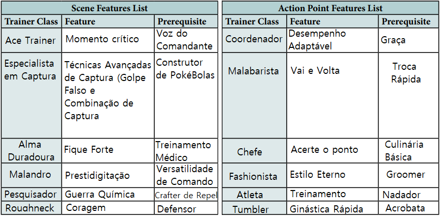
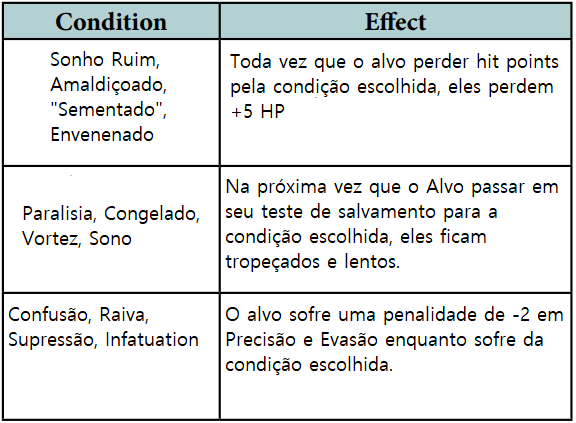

Capítulo Anterior: Criando Treinadores
Classes de Treinador
Introdução às Classes de Treinador
As Classes de Treinador são um tipo especial de Recurso que também atua como uma porta de entrada para vários Recursos relacionados. A Classe em si é o Recurso de Classe para uma Classe de Treinador e é necessária para usar quaisquer outros Recursos dessa Classe.
Ao contrário de outros jogos de RPG em que um personagem tende a se limitar a apenas uma classe e a multiclasse é rara ou difícil, em Pokémon Tabletop United, espera-se que os personagens escolham várias classes diferentes à medida que ganham níveis e avançam. Cada Classe de Treinador representa uma especialidade restrita, da qual um Treinador aventureiro provavelmente aprenderá várias durante sua jornada.
Não existe um nível mínimo para ter várias classes no Pokémon Tabletop United, mas um Treinador só pode pertencer a no máximo quatro classes.
Salvo indicação em contrário, você só pode participar de uma determinada Classe de Treinador uma vez. Algumas classes são conhecidas como classes ramificadas, e você pode pegá-las várias vezes (cada vez ocupando um de seus quatro slots de classe), escolhendo especialidades diferentes a cada vez, como Grass Ace e Fire Ace dentro do Type Ace.
As Classes são separadas em várias categorias no Pokémon Tabletop United.
Classes introdutórias são Classes básicas que podem fornecer a base para muitas construções de personagens. Eles são Ace Trainer, Especialista em Captura, Comandante, Coordenador, Hobbyist e Mentor.
As classes de estilo de batalha são especializadas em um conjunto distinto de estratégias de batalha. Eles são: líder de torcida, duelista, alma duradoura, malabarista, cavaleiro, capataz e malandro.
Classes de Equipes Especializadas coletam Pokémon com uma característica específica e revelam o potencial dessa característica. Eles são Stat Ace, Style Expert e Type Ace.
As Classes Profissionais utilizam habilidades menos ligadas à busca da Liga Pokémon, como pesquisa e artesanato, mas ainda assim encontram maneiras de melhorar seus Pokémon e ajudar seus aliados. São Chef, Cronista, Fashionista, Pesquisador e Sobrevivente.
As Classes de Lutador lutam ao lado de seus Pokémon. Eles são Atleta, Dançarino, Caçador, Artista Marcial, Músico, Provocador, Ladino, Roughneck e Tumbler.
Classes Sobrenaturais exercem poderes sobre-humanos. Eles são Guardião de Aura, Canalizador, Maníaco Hex, Ninja, Oráculo, Sábio, Telecinético, Telepata e Warper.
Como ler classes?
As Classes de Treinador são apresentadas de forma semelhante ao formato de “Árvore de habilidades”. Eles começam com um Recurso de Classe que atua como porta de entrada para o resto da Classe e fornece uma função básica que é emblemática da Classe. Lembre-se de que esses Recursos de Classe contam para fins de pré-requisitos que exigem um certo número de recursos dentro de uma classe. Os Treinadores só podem ter no máximo quatro Recursos de Classe.
Habilidades Associadas
Além disso, cada Classe de Treinador possui uma lista de Habilidades Associadas. Estas não são necessariamente todas obrigatórias para a Classe, mas são Habilidades que aparecem em algum lugar nos pré-requisitos para os Recursos da Classe (ou como pré-requisitos para seus pré-requisitos), às vezes como a única opção e às vezes como parte de um grande conjunto de opções
Funções
Finalmente, cada Classe de Treinador tem uma classificação atribuída às suas Funções. Um total de cinco pontos, indicados por símbolos de Pokébola, são distribuídos em cinco categorias diferentes para avaliar o quanto a Classe se dedica a cada Função. Observe que estes não avaliam a eficácia de uma classe na função! Eles apenas mostram o quanto a Classe se concentra em cada função, geralmente como uma tradução aproximada de quantos Recursos contribuem para cada função. Use-os para ajudá-lo a escolher classes que atendam ao que você deseja que seu personagem realize, mas certifique-se de escolher classes que atendam à essência de seu personagem em primeiro lugar.
Suporte Pokémon Ativo significa que a Classe de Treinador foi criada para usar suas ações para apoiar e buffar seus Pokémon. Isso pode variar desde motivar um Pokémon a lutar melhor até direcionar o movimento dos aliados no campo de batalha. Normalmente, as Classes marcadas com esta função gastam PA em seus Recursos, usam Ações Padrão para ativá-los ou uma combinação de ambos. Os seus recursos e ações são limitados e devem ser cuidadosamente orçamentados.
Suporte Pokémon Passivo significa que a Classe de Treinador é feita para apoiar seus Pokémon, mas não requer ações em combate para isso. Frequentemente, isso significa que os benefícios são adquiridos fora do combate, como por meio de tutoria ou bônus de treinamento aprimorados. Algumas classes que se concentram fortemente nesta função podem ter efeitos ativados em batalha, mas tendem a ser ações rápidas ou livres. As turmas dedicadas a esta função estão menos preocupadas em orçamentar ações ou recursos no meio da batalha.
Crafting significa que a Classe se concentra na criação de itens que podem ajudar a si mesmo e a seus aliados. Essas Classes geralmente exigem a dedicação de recursos ou tempo para adquirir materiais para sua criação e geralmente não possuem muitos Recursos para usar uma Ação Padrão em batalha.
Combate significa que a classe Trainer foi projetada para entrar no calor da batalha e provavelmente usará suas ações padrão na batalha para lutar. Classes dedicadas a essa função tendem a ter a Tag de Stat em seus recursos para ajudar os Treinadores a acompanhar os Pokémon em combate. A maioria deles também concederá habilidades e movimentos ao treinador.
Viagem e Investigação significa que a Classe de Treinador foi projetada para aliviar o fardo da viagem ou ajudar em situações fora de combate. Esta é a função mais variada, com Classes dedicadas a ela especializadas em atividades que vão desde eliminar Pokémon Selvagens até manobras sociais e pesquisas até encontrar caminhos na natureza.
Observe que essas funções não dizem nada sobre a essência de uma classe. Líder de Torcida, Taskmaster e Comandante são principalmente classes de suporte de Pokémon ativos, mas cada um deles aborda essa função de uma maneira muito diferente.
Ao construir um treinador, você não quer se espalhar muito nem se especializar muito. Algumas funções têm melhor sinergia com outras. Misturar Suporte de Pokémon Ativo e Combate de Treinador às vezes é difícil, por exemplo, porque você tem um número finito de Ações Padrão para usar em batalha e PA por cena, e suas Classes competirão por elas. Funções estáticas ou não de combate, como Suporte Pokémon Passivo ou Viagem e Investigação, combinam bem com essas funções ativas, mas se você se dedicar apenas aos efeitos passivos, não terá nada para fazer na batalha ou maneiras de gastar PA. Criar é sempre útil. No entanto, você corre o risco de gastar seu dinheiro com muitas Classes de Crafting.
Lista das Classes:
Aqui, você encontrará uma lista de todas as classes de treinadores do livro principal do Pokémon Tabletop United. Eles estão agrupados pelas categorias descritas nas páginas anteriores. Cada entrada lista o nome da classe, as habilidades que ela usa, uma breve descrição e suas classificações para as diversas funções no PTU. A maioria das classes oferece alguma flexibilidade na escolha de quais habilidades usar dentre as habilidades atribuídas. Para Classes com listas de Habilidades maiores (3 ou mais), normalmente você só precisa ter algumas dessas Habilidades, não todas!
Classes introdutórias: Essas Classes são completas e podem contribuir para praticamente qualquer construção de personagem sem forçá-lo a escolher seu time de acordo com uma estratégia específica. A maioria dos arquétipos básicos do Treinador Pokémon estão representados aqui. Os recém-chegados ao PTU devem escolher uma dessas classes como base e expandir seus personagens a partir daí com opções de classes mais especializadas. Eles são:
Ace Trainer, Especialista em Captura, Comandante, Coordenador, Hobbyist e Mentor.
Classes de Estilo de Batalha: Essas classes são dedicadas a estilos de batalha específicos. Escolher uma dessas classes fará uma grande declaração sobre como seu personagem aborda o treinamento e as batalhas Pokémon. Ao contrário das classes de equipe especializada, a escolha de uma classe de estilo de batalha não exige que você seja altamente seletivo em relação às escolhas de Pokémon, mas certos Pokémon se adaptam melhor a determinados estilos de batalha do que outros. Personagens construídos usando uma Classe Introdutória como base transitam facilmente para uma dessas Classes para se especializarem e se desenvolverem ainda mais. Eles são:
Líder de Torcida, Duelista, Alma Duradoura, Malabarista, Cavaleiro, Capataz e Malandro.
Classes de Equipes Especializadas: essas classes se concentram em um tipo específico de Pokémon que eles preferem usar, e aceitá-las guiará a equipe do seu personagem nessa direção. Muitos treinadores proeminentes da franquia Pokémon, como líderes de ginásio e seus protegidos, criam equipes especializadas e estariam bem representados nessas classes. Embora esta lista possa parecer pequena, é simplesmente porque cada uma dessas classes tem muitas variações – 5 estatísticas diferentes para Stat Ace e Style Expert cada e 18 tipos diferentes para Type Ace! Elas são:
Stat Ace, Style Expert e Type Ace.
Classes Profissionais: Classes representam um conjunto de habilidades que não se esperaria ver na vida de um Treinador itinerante, como uma área de estudo acadêmica ou habilidade profissional. Essas habilidades costumam ser úteis para os batalhadores, como preparar comida para impulsionar o combate como Chef ou criar Pokémon com os talentos Pokémon Zelador em Pesquisador, mas todas elas podem representar interesses profissionais fora da conquista da Liga Pokémon ou do Circuito de Concurso. Elas são:
Chef, Cronista, Fashionista, Pesquisador e Sobrevivente.
Classes de Lutadores: Essas classes lutam em batalha ao lado de seus Pokémon. Suas habilidades não podem ser utilizadas durante as batalhas oficiais da Liga Pokémon, exceto nas regras de contato completo, mas são úteis ao viajar pela selva ou enfrentar criminosos. Nem todas as classes de combate causam dano diretamente; alguns, como o Dançarino, desempenham um papel mais de apoio. Eles são:
Atleta, Dançarino, Caçador, Artista Marcial, Músico, Provocador, Ladino, Roughneck e Tumbler.
Classes sobrenaturais: Essas classes exercem poderes sobrenaturais. A maioria dessas Classes são destinadas ao Combate de Treinador e podem ser tratadas de forma semelhante às Classes de Luta, mas muitas vezes também têm poderes utilitários que ajudam durante aventuras investigativas. A franquia Pokémon tem muitos exemplos de personagens com habilidades mágicas, mas esta categoria também existe como um guia fácil para GMs que desejam suavizar alguns dos aspectos mais fantásticos do mundo Pokémon, pelo menos no lado do Treinador. Eles são:
Guardião de Aura, Canalizador, Maníaco Hex, Ninja, Oráculo, Sábio, Telecinético, Telepata e Warper.
Classes Introdutórias
Essas classes são completas e podem contribuir para praticamente qualquer construção de personagem sem forçá-lo a escolher seu time de acordo com uma estratégia específica. A maioria dos arquétipos básicos do Treinador Pokémon estão representados aqui. Os recém-chegados ao PTU devem escolher uma dessas classes como base e expandir seus personagens a partir daí com opções de classes mais especializadas.
Elas são: Ace Trainer, Especialista em Captura, Comandante, Coordenador, Hobbyist e Mentor.
Ace Trainer
Habilidades Associadas: Comando
Os Treinadores Ace pretendem ser os melhores em Batalhas Pokémon – e estão dispostos a trabalhar duro para adquirir as habilidades necessárias para sustentar essa ambição.
Mais do que qualquer outro treinador, os Ace Trainers são caracterizados pela sua dedicação e natureza trabalhadora. Não contentes em aproveitar quaisquer talentos naturais que eles e seus Pokémon possam desenvolver, os Ace Trainers tendem a estudar estratégia e técnica e treinar seus Pokémon diariamente para garantir que estejam preparados para quaisquer batalhas futuras.
Muitas pessoas podem achar a dedicação de um Ace Trainer quase fanática e sua dedicação ao treinamento cruel com seus Pokémon. Pode haver alguma verdade nisso; Ace Trainers insensíveis e sedentos de poder muitas vezes sobrecarregam seus Pokémon em sua busca para serem os melhores. Mas muitos Treinadores Ace conseguem chegar a entendimentos com os seus Pokémon e, trabalhando dentro desta parceria, tornam-se realmente mais próximos dos seus Pokémon do que muitos outros tipos de treinadores.
E independentemente do vínculo pessoal de um Ace Trainer com seus Pokémon, seu treinamento constante é obviamente eficaz. Outros tipos de treinadores podem ser melhores em direcionar os Pokémon para objetivos específicos, mas os Ace Trainers são especialistas em extrair o potencial inato de um Pokémon.
Em campanhas que apresentam um desafio da Liga Pokémon, os Ace Trainers provavelmente estarão muito interessados em obter insígnias de ginásio e competir em torneios. Alguns podem até estar interessados em competir em outros eventos, como Concursos ou Pokéathlons, para ajudar a treinar seus Pokémon.
Ace Trainer
[Classe]
Pré-requisitos: Comando – Novato
Drenar 1 PA – Ação Estendida
Gatilho: Você passa pelo menos meia hora treinando seu Pokémon
Efeito: Para cada Pokémon treinado durante esse período, escolha um Stat além de HP; esse Stat se torna Treinado até que um Descanso Prolongado seja feito. O estado padrão das estatísticas treinadas é +1 Estágios de Combate em vez de 0. Um Pokémon pode ter apenas uma estatística treinada por vez.
OBS: só para esclarecer, esse recurso drena 1 PA por sessão de treinamento, não por Pokémon. Então treine o máximo que puder para aproveitar ao máximo esse recurso!
Perseverança
Pré-Requisitos: Ace Trainer
1 PA – Ação Livre
Gatilho: Seu Pokémon sofre uma lesão
Efeito: Em vez disso, o alvo não sofre Ferimento. A Perseverança pode ser ativada apenas uma vez por cena por alvo.
Treinador de elite
Pré-Requisitos: Ace Trainer
Estático
Efeito: Escolha Treinamento de Agilidade, Treinamento Brutal, Treinamento Focado ou Treinamento Inspirado. Você ganha o recurso escolhido, mesmo que não atenda aos pré-requisitos. Ao treinar, você pode aplicar até dois recursos de [Treinamento] diferentes em cada um dos seus Pokémon. Se você já possui todos esses recursos, escolha outro recurso para o qual você se qualifica.
Momento critico
Pré-Requisitos: Treinador de Elite, Comando – Adepto
Estático
Efeito: Escolha Treinamento de Agilidade, Treinamento Brutal, Treinamento Focado ou Treinamento Inspirado. Você ganha o recurso escolhido, mesmo que não atenda aos pré-requisitos. Ao treinar, você pode aplicar até dois recursos de [Treinamento] diferentes em cada um dos seus Pokémon. Se você já possui todos esses recursos, escolha outro recurso para o qual você se qualifica.
Porcentagem superior
Pré-Requisitos: Treinador de Elite, Comando – Especialista
À vontade – Ação Livre
Gatilho: Seu Pokémon sobe de nível até um nível divisível por 5
Efeito: Seu Pokémon ganha um Ponto de Tutor extra. Top Percentage pode ser usado em um único Pokémon no máximo 4 vezes. Assim que um Pokémon ganhar 4 Pontos de Tutor dessa forma, aumente cada uma das estatísticas básicas desse Pokémon em +1.
Campeão em formação
Pré-Requisitos: 4 recursos de Ace Trainer, Comando – Mestre
Drenar 1 PA – Ação Livre
Gatilho: você usa Ace Trainer para fornecer estatísticas treinadas ao Pokémon
Efeito: Escolha duas estatísticas treinadas para cada Pokémon em vez de uma. Um Pokémon só pode ter duas estatísticas treinadas dessa forma.
Técnica de Assinatura
Pré-Requisitos: Treinador de Elite, Comando – Especialist
À vontade – ação estendida
Alvo: Seu Pokémon com pelo menos 2 Tutor Points restantes
Efeito: : O alvo perde 2 Pontos de Tutor. Escolha um movimento na lista de movimentos do alvo. Esse Movimento se torna a Técnica Característica do alvo, e você pode aplicar uma das modificações da próxima página ao Movimento. O movimento que está sendo modificado deve se enquadrar na categoria da modificação e você deve ter o recurso de treinamento associado para aplicar uma modificação. Um Pokémon só pode ter uma Técnica de Assinatura por vez. Se você decidir ensinar a um Pokémon uma Técnica de Assinatura diferente, a antiga será perdida e 1 Ponto de Tutor será reembolsado. 1 Tutor Point também será reembolsado se o Pokémon esquecer um Movimento de Técnica de assinatura.
Nota: Lembre-se de dar um nome legal para sua técnica de assinatura!
Movimentos de cone, linha, explosão e explosão
Scattershot – Treinamento de Agilidade: Em vez do alcance normal do Move, tem alcance de 4m, 3 alvos.
Choque e Pavor – Treinamento Inspirado: Os inimigos alvo do Movimento sofrem uma penalidade de -2 em Testes de Salvamento e uma penalidade de -1 em Evasão até o final do próximo turno do usuário. Este efeito se aplica quer o ataque acerte ou erre.
Tempestade Viciosa – Treinamento Brutal: O Movimento ganha a palavra-chave Smite. Aplicável apenas a movimentos prejudiciais.
Movimentos de alvo único
Golpe de Guarda – Treinamento Inspirado: Se este movimento acertar, o usuário ganha +5 de Redução de Dano contra o alvo do ataque até o final do próximo turno.
Golpe Desequilibrado – Treinamento Brutal: Os inimigos alvo do Movimento sofrem uma penalidade de -2 em Testes de Salvamento e uma penalidade de -1 em Evasão até o final do próximo turno do usuário. Este efeito se aplica quer o ataque acerte ou erre.
Ataque Confiável – Treinamento Focado: Se o Movimento errar o alvo, sua Frequência não é gasta e o usuário pode realizar imediatamente um Ataque de Luta como uma Ação Livre. Não pode ser aplicado a movimentos com a palavra-chave Golpear.
Movimentos prejudiciais
Energia Alternativa – Treinamento Focado: Mude a Classe do Movimento de Físico para Especial ou vice-versa.
Velocidade Sangrenta – Treinamento de Agilidade: Este movimento pode ser usado como Prioridade (Avançado) se o usuário tiver menos da metade de seus Pontos de Vida máximos.
Double Down – Treinamento Brutal: O movimento ganha a palavra-chave Double Strike. Efeitos e Intervalos de Efeitos podem ser acionados apenas uma vez (mas qualquer rolagem pode acionar o efeito). Isso só pode ser aplicado a movimentos com uma base de dano de 4 ou menos, e não pode ser aplicado a movimentos cuja base de dano muda sob certas condições (como Fury Cutter ou Ice Ball) ou movimentos com dano de caso especial (como Night Sombra).
Mudanças de status
Explosão de Motivação – Treinamento Inspirado:Depois que este movimento for resolvido, o usuário pode aumentar quaisquer estatísticas com estágios de combate negativos em até +2 estágios de combate (mas isso não pode colocar os estágios de combate acima de +0 CS total).
Concentração Suprema – Treinamento Focado: Este movimento pode ser usado mesmo se o usuário estiver paralisado, encolhido, enfurecido ou tiver falhado no teste de salvamento de confusão.
Maldição Dupla – Treinamento de Agilidade: O usuário pode atingir um inimigo adicional com este ataque. Isto pode ser aplicado apenas a movimentos de 1 alvo.
Especialista em captura
Perícias Associadas: Acrobacia, Atletismo, Furtividade, Sobrevivência, Percepção, Astúcia
Sem medo de enfrentar os perigos da natureza em sua missão, os Especialistas em Captura são incomparáveis em habilidade ao usar Pokébolas, redes e outros dispositivos para capturar Pokémon. Muitos Especialistas em Captura estão em busca de “Catch 'Em All”, enquanto outros estão interessados apenas em capturar Pokémon fortes e raros, e outros ainda podem ter seus próprios critérios específicos, como capturar apenas Pokémon Bug.
Os Especialistas em Captura são motivados por vários motivos; alguns podem estar simplesmente tentando encontrar o Pokémon mais forte que puderem para usar em sua jornada pessoal. Outros podem simplesmente gostar do desafio. Alguns capturam Pokémon para trocar e vender; esse tipo de Especialista em Captura tende a ser caçadores furtivos de coração frio, que capturam Pokémon ameaçados de extinção ou devastam comunidades selvagens inteiras em busca de lucro. Quaisquer que sejam as razões, ninguém pode negar que os Especialistas em Captura são bons no que fazem.
Os Especialistas em Captura tendem a ser personagens versáteis e completos; muitos deles se concentram em melhorar muitas habilidades diferentes, como Percepção ou Sobrevivência, para ajudá-los em suas missões na selva. Muitos deles também aprendem a criar e modificar suas próprias Pokébolas, para reduzir os custos da carreira escolhida.
Especialista em Captura
[Classe] [+Velocidade]
Pré-requisitos: Acrobacia, Atletismo, Furtividade ou Sobrevivência – Novato; Astúcia ou Percepção – Novato
Efeito: Você ganha duas Técnicas de Captura à sua escolha, encontradas na próxima página. Você deve atender a todos os pré-requisitos da Técnica.
Momento Capturado
[+ Velocidade]
Pré-Requisitos: Técnicas Avançadas de Captura Rank 2
À vontade – Ação Livre
Gatilho: Você capturou um Pokémon com sucesso
Escolha UM Efeito: Escolha duas estatísticas treinadas para cada Pokémon em vez de uma. Um Pokémon só pode ter duas estatísticas treinadas dessa forma.
- Você ou seu Pokémon ganham um bônus de +2 em seu próximo teste de precisão durante este combate.
- Você subtrai seu maior nível de habilidade de Acrobacia, Atletismo, Furtividade, Sobrevivência, Astúcia ou Percepção de sua próxima jogada de captura durante este combate.
- Você ganha 1 Ponto de Ação Temporário que desaparece após uma rodada completa.
Gotta catch 'em all
[+Velocidade]
Pré-Requisitos: Técnicas Avançadas de Captura Rank 3
3x Dia – Ação Rápida
Gatilho: Você faz uma jogada de captura.
Efeito: Você pode trocar os dígitos lançados em sua jogada de 1d100. Por exemplo, se você rolar 91, isso pode ser alterado para 19. Isso não transforma um lançamento de 1 em um lançamento “Natural” de 100.
Técnicas Avançadas de Captura
[4 Rank] [+Velocidade]
Pré-Requisitos do Rank 1: Especialista em Captura
Pré-Requisitos do Rank 2: Especialista em Captura, quaisquer 2 Habilidades em Adepto
Pré-Requisitos do Rank 3: Especialista em Captura, quaisquer 2 Habilidades em Especialista
Pré-Requisitos do Rank 4: Especialista em Captura, quaisquer 3 Habilidades em Especialista
Estático
Efeito: Em cada Nível, você ganha duas Técnicas de Captura à sua escolha, encontradas na próxima página. Você deve atender a todos os pré-requisitos da Técnica. Você pode se qualificar para os pré-requisitos de Técnicas Avançadas de Captura apenas com Habilidades de Acrobacia, Atletismo, Furtividade, Sobrevivência, Astúcia ou Percepção.
Habilidades de captura
Estático
Efeito: Você ganha uma vantagem de habilidade para a qual se qualifica. Deve ser aplicado a Acrobacia, Atletismo, Furtividade, Sobrevivência, Astúcia ou Percepção. Você pode realizar habilidades de captura até duas vezes.
Bola curva
Estático
Efeito: Sempre que você acertar um alvo com uma Pokébola, você poderá causar dano como se o tivesse atingido com um Ataque de Luta. Este dano é desencadeado antes de qualquer função da Pokébola (como fazer uma verificação de captura, liberar um Pokémon, etc.).
Laço
Estático
Efeito: Você subtrai -10 das jogadas de captura feitas contra Pokémon atraídos para um encontro por Bait, que estão atualmente distraídos por Bait ou que estão em uma rede de mão, laço, rede ponderada ou presos por causa de um canhão de cola.
Passo Rápido
1 PA – Ação Padrão, Prioridade (Avançado)
Efeito: Você imediatamente lança uma Pokébola
Ferramentas do comércio
Estático
Efeito: VAdicione +2 a todos os testes de precisão feitos com Pokébolas, Redes de Mão, Laços, Redes Pesadas e Canhões de Cola. Adicione +2 às verificações de atletismo feitas ao pescar um Pokémon com uma vara de pescar e adicione +4 às jogadas de 1d20 feitas para ver se um Pokémon é atraído por uma isca ou isca de pesca.
Golpe Falso
Pré-requisitos: 3 entre Acrobacia, Atletismo, Furtividade, Sobrevivência, astúcia ou percepção no nível especialista
Estático
Gatilho: O ataque de você ou do seu Pokémon desmaia um Pokémon Selvagem.
Efeito: O Pokémon Selvagem é reduzido para 1 Ponto de Vida.
Perseguição Implacável
2 PA – Ação Livre, Interrupção
Pré-requisitos: 3 habilidades de Acrobacia, Atletismo, Furtividade, Sobrevivência, Astúcia ou Percepção no Nível Especialista
Gatilho: Um inimigo tenta fugir
Efeito: Antes que o alvo se mova de seu local inicial, um dos seus Pokémon no campo pode imediatamente usar Shift e usar um Struggle Attack como interrupção. Se este ataque acertar, o alvo fica tropeçado.
Combinação de captura
Diário – Ação Livre
Pré-requisitos: 3 habilidades de Acrobacia, Atletismo, Furtividade, Sobrevivência, Astúcia ou Percepção no Nível Especialista
Gatilho: O ataque do seu Pokémon desmaia um Pokémon Selvagem.
Efeito: Você pode lançar imediatamente uma Pokébola contra o Pokémon Selvagem que o ativou, e ele pode ser Capturado mesmo que seja nocauteado. Calcule a taxa de captura como se o alvo tivesse 1 HP. Se a tentativa de captura falhar, o Pokémon será nocauteado normalmente.
Arremesso Desvitalizante
1 PA – Ação Livre
Pré-requisitos: 3 habilidades de Acrobacia, Atletismo, Furtividade, Sobrevivência, Astúcia ou Percepção no Nível Especialista
Gatilho: um Pokémon escapa de uma Pokébola que você jogou
Efeito: Você pode lançar imediatamente uma Pokébola contra o Pokémon Selvagem que o ativou, e ele pode ser Capturado mesmo que seja nocauteado. Calcule a taxa de captura como se o alvo tivesse 1 HP. Se a tentativa de captura falhar, o Pokémon será nocauteado normalmente.
Comandante
Habilidades Associadas: Comando
Os comandantes são treinadores autorizados que se concentram na batalha contra Pokémon. Os comandantes preferem ficar na retaguarda e dirigir seus aliados durante a batalha, como um maestro conduzindo uma grande orquestra. Sua versatilidade é seu maior ponto forte, e eles muitas vezes ficam ansiosos e orgulhosos de usá-los.
Os comandantes tendem a gostar de planos complexos e configurações táticas; como tal, eles fazem uso mais eficaz e eficiente dos Recursos de Pedidos que estão disponíveis para todos os Treinadores por meio dos Recursos Gerais e têm uma boa sinergia com outras Classes que também possuem seus próprios Pedidos. Eles são especialistas em organizar ataques mortais e bem coordenados.
Comandante
[Classe]
Pré-requisitos: Comando Iniciante
Estático
Efeito: Escolha uma das Ordens do Devastador, Ordens do Atirador, Ordens do Malandro, Ordens do Guardião ou Ordens de Precisão. Você ganha a Vantagem escolhida, mesmo que não atenda aos seus pré-requisitos.
Mobilizar
[Ordem]
Pré-Requisitos: Comandante
À vontade – Ação Livre
Alvo: Qualquer Aliado
Efeito: O alvo não pode provocar Ataques de Oportunidade no próximo turno. Mobilizar pode mirar em um Aliado apenas uma vez por encontro.
Liderança
Pré-Requisitos: Comandante
Estático
Alvo: Qualquer Aliado
Efeito: Você pode usar [Ordens] que tenham alvos para atingir qualquer Aliado, mesmo que normalmente essas [Ordens] só permitam que você aplique o efeito ao seu próprio Pokémon. Quaisquer outras condições ainda se aplicam.
Maestro de Batalha
Pré-Requisitos: Liderança
À vontade – ação rápida
Gatilho: Você dá [Ordens] com uma Frequência Sem Limite que tenham alvos
Efeito: Você pode usar [Ordens] que tenham alvos para atingir qualquer Aliado, mesmo que normalmente essas [Ordens] só permitam que você aplique o efeito ao seu próprio Pokémon. Quaisquer outras condições ainda se aplicam.
Pedidos Complexos
[Ordem]
Pré-Requisitos: Mastermind, pelo menos dois recursos com a tag [Ordens] que tenham alvos
À vontade – Ação de Troca
Gatilho: Você dá [Ordens] que têm alvos.
Efeito: Você pode escolher uma Ordem diferente para dar a cada Alvo. Você deve pagar todos os custos de AP e seguir as restrições de frequência para todos os pedidos usados dessa forma.
Incline a balança
Pré-Requisitos: Comandante, Comando Especialista
2PA – Ação Rápida
Gatilho: Você dá [Ordens] que têm alvos.
Efeito: Suas [Ordens] com Frequência À Vontade têm como alvo todos os aliados em um raio de 10 metros.
Esquema de torção
Pré-Requisitos: Comandante, Comando – Mestre
Cena x2 – Ação Rápida
Gatilho: Você dá [Ordens] com uma Frequência Diária ou de Cena que tenha Alvos.
Efeito: Você pode escolher até dois Aliados adicionais com as [Ordens].
Nota: Isto pode ser usado com [Ordens] que tenham custos de AP, mas o custo de AP deve ser pago separadamente para cada alvo se for o caso.
Coordenador
Perícias Associadas: Charme, Comando, Astúcia, Intimidação e Intuição
Os coordenadores não são especializados em Batalhas Pokémon, mas em Concursos Pokémon. Nos Concursos Pokémon, os Pokémon competem não para se machucarem, mas para usarem seus ataques e habilidades para impressionar os juízes do concurso e a multidão que assiste. O mundo dos concursos Pokémon é tão competitivo quanto o cenário das batalhas Pokémon e, portanto, não basta apenas cuidar da aparência física de um Pokémon; Os coordenadores devem aprender a orientar seus Pokémon para agirem com graça e charme, e inovar para que possam se destacar da multidão. Ao enfrentar estes desafios, os Coordenadores adquirem naturalmente uma capacidade de orientação e liderança, e este talento para dirigir outros pode até ser explorado em seu benefício na batalha; aqui eles podem distrair e perturbar os inimigos ou reforçar seus aliados com incentivos ou oportunidades.
Embora muitos Coordenadores evitem Batalhas Pokémon, ironicamente seu treinamento também melhora as habilidades de Batalha de seus Pokémon. Seus Pokémon aprendem a manter a calma sob pressão e a dar tudo de si, seja no palco ou na arena. E, como os Ace Trainers, a grande dedicação que os Coordenadores têm para com seus Pokémon se presta a criar laços fortes com seus parceiros. E essa disposição de seus Pokémon em dar o melhor de si pode fazer toda a diferença.
Coordenadores são raros em ambientes sem Concursos Pokémon, mas isso não quer dizer que não possam ser usados lá. Os coordenadores podem representar treinadores que treinam seus Pokémon com equilíbrio e elegância e valorizam a coesão e a dependência em vez de manobras arriscadas.
Coordenador
[Classe]
Pré-requisitos: Graça, Charme Novato, Comando, Astúcia, Intimidação ou Intuição – Novato
À vontade – Ação Livre
Efeito: Seu Pokémon pode rolar novamente uma única jogada de apelo ou jogada de dano. Esta habilidade pode ser usada apenas uma vez por competição e uma vez por Pokémon por cena.
Diretor Decisivo
[Ordem]
Pré-Requisitos: Coordenador
À Vontade – Ação Padrão
Alvo: O Pokémon
Efeito: Adicione ou subtraia X da Iniciativa do alvo até o final do seu próximo turno. X é igual ao seu Charm Rank duplicado.
Desempenho Diferenciado
Pré-Requisitos: Coordenador, Charme, Comando, Astúcia, intimidação ou intuição – Especialista
1 PA – Ação Livre
Gatilho: Seu Pokémon erra todos os alvos com um Movimento
Efeito: A frequência desse movimento não é gasta. Isso não funciona com movimentos que podem não ser ativados, como movimentos com a palavra-chave Executar.
Preparações Flexíveis
Pré-Requisitos: Desempenho Adaptável; Charme, Comando, Astúcia, Intimidação ou Intuição – Adepto
Diariamente – Ação Estendida
Alvo: Um Pokémon que possui estatísticas de concurso de Poffins
Efeito: O alvo pode realocar até 2d6 de Atributos de Competição Derivados de Poffin de um Atributo de Competição para outro. Este efeito dura até o final do dia.
Desempenho Adaptável
Pré-Requisitos: Coordenador
Cena – Ação Livre
Gatilho: É a vez do seu Pokémon usar um movimento em um Contest
Efeito: Escolha dois dos movimentos do seu Pokémon. Seu Pokémon pode realizar seu Contest Move como se tivesse a Contest Typing de um dos seus movimentos escolhidos e tivesse os efeitos do outro. Você não pode usar nenhum dos movimentos na próxima rodada da competição. Este efeito pode ser usado uma vez por Competição.
Desempenho Confiável
Pré-Requisitos: Desempenho diferenciado, Charme, Comando, Astúcia, Intimidação ou Intuição – Mestre
2 PA – Ação Livre
Gatilho: Seu Pokémon faz uma jogada de apelação, verificação de precisão ou verificação de habilidade
Efeito: Para jogadas de apelação, em vez de fazer a jogada de apelação, você ganha 1 ponto de apelação para cada dado que teria lançado. Para verificações de precisão, aja como se você tivesse tirado um 10. Para verificações de habilidade, multiplique 3,5 pela classificação de habilidade do seu Pokémon e use o número resultante como resultado de sua rolagem, arredondado para baixo. Para todas as jogadas, adicione ou subtraia quaisquer modificadores normalmente.
Inovação
[Ordem]
Pré-Requisitos: Desempenho Adaptáve
Diário – Ação Estendida
Alvo: Um Pokémon com pelo menos 1 Ponto de Tutor.
Efeito: O alvo perde 1 Ponto de Tutor e aprende um Movimento criado com Inovação. Consulte a próxima seção para obter detalhes sobre a criação de movimentos para este recurso. Um Pokémon só pode ter um movimento criado pela Inovação por vez.
Movimentos de Inovação
O recurso “Inovação” do Coordenador permite que o Coordenador crie novos movimentos para seus Pokémon. Esses movimentos podem servir para preencher lacunas nas listas de movimentos para batalhas e competições e fornecer utilidade.
Para criar um movimento, primeiro escolha um tipo de concurso. Isso afeta os efeitos do movimento e, claro, seu papel nas competições.
Em seguida, escolha um efeito de concurso. Veja a seção “Efeitos de concurso” (página 266) em “Concursos” para obter a lista completa. Escolha um. Isso mesmo, qualquer um deles. Isso determina o que o Movimento faz durante uma Competição, é claro.
Terceiro, escolha um dos quatro modelos abaixo. Isso determina os efeitos do movimento na batalha. Eles são modificados pelo Tipo de Concurso do Movimento. Lembre-se, Cool está associado ao Ataque, Resistente à Defesa, Beleza ao Ataque Especial, Inteligente à Defesa Especial e Fofo à Velocidade.
E finalmente, dê um nome ao seu movimento! Esta é a melhor parte!
Modelo #1
Tipo: Normal
Frequência: Cena
CA: Nenhum
Classe: Status
Alcance: Auto
Efeito: O usuário gera 3 Benefícios de Competição. Eles podem ser usados como uma Ação Rápida no seu turno para ganhar um dos efeitos abaixo, com base no Tipo de Concurso deste Movimento
- Beleza: Use ao declarar um ataque (antes do teste de precisão) para ganhar um bônus de +3 no alcance do efeito para esse ataque.
- Legal: Use ao declarar um ataque (antes do Rolamento de Precisão) para ganhar um bônus de +3 no Alcance de Acerto Crítico para esse ataque.
- Fofo: Use durante o seu turno para ganhar +3 de Evasão por uma rodada completa.
- Inteligente: Use ao declarar um ataque (antes do Rolamento de Precisão) para ganhar um bônus de +3 na Precisão para esse ataque.
- Difícil: Use no início de um turno para evitar toda a perda de pontos de vida devido a aflições de status, clima e recuo naquele turno.
Modelo #3
Tipo: Varia
Frequência: EOT
CA: Varia
Classe: Varia
Alcance: Varia, Surto Espiritual
Efeito: Faça um Ataque de Luta, aumentando a jogada de dano em +5. Siga todas as outras regras normais para realizar ataques de Luta, incluindo quaisquer modificações de capacidades, recursos ou efeitos especiais. Em 18+, o Stat do usuário associado ao tipo de competição deste movimento é aumentado em +1 estágio de combate. O Alcance de Efeito deste Movimento é estendido em +1 para cada dois Dados de Competição que o usuário possui que correspondam ao Tipo de Competição deste Movimento.
Modelo #2
Tipo: Varia
Frequência: Cena x2
CA: Nenhum
Classe: Estado
Alcance: 6, 1 Alvo
Efeito: FO alvo tem o Atributo associado ao Tipo de Concurso deste Movimento reduzido em -2 Estágios de Combate. Este movimento não pode falhar.
Modelo #4
Tipo: Normal
Frequência: Cena
CA: Nenhum
Classe: Estado
Alcance: Burst 2
Efeito: Todos os aliados no Burst, exceto o usuário, ganham +1 Estágio de Combate na Estatística associada ao Tipo de Concurso deste Movimento.
Hobbysta
Habilidades Associadas: Educação Geral, Percepção
Nem todos os Treinadores seguem o caminho de uma especialidade restrita. Alguns Treinadores optam por se envolver em uma variedade de habilidades, optando por aprender o que é útil para sua jornada imediata e depois seguir em frente, em vez de dedicar sua vida a uma arte. Esses Hobbyists aprendem rápido, adquirindo habilidades práticas facilmente, sem necessariamente ter a experiência ou o treinamento normalmente exigidos.
Os treinadores que se tornam hobbyistas geralmente são aqueles que realmente viajam pelo país, pesquisando por toda parte. Eles conhecem muitos treinadores diferentes em sua jornada e podem aprender observando-os praticar suas habilidades.
Ajustando-se ao seu eclético conjunto de habilidades, os Hobbyistas raramente exibem um tema ou padrão para os Pokémon que capturam, optando por capturar o que quer que esteja por perto enquanto viajam. Um Hobbyist combina bem com a maioria das classes, preenchendo as lacunas que as classes mais especializadas têm em seus conjuntos de habilidades.
Hobbysta
[Classe]
Pré-requisitos: Educação Geral – Novato, Percepção – Novato
Efeito: Você ganha três vantagens de habilidade para as quais se qualifica.
Especial: Você pode contar as Características Hobbyist como "Vantagens Gerais” para efeitos de qualquer efeito que lhe conceda uma Característica Geral.
Diletante
[Rank 4]
Pré-Requisitos para todas as classificações: Hobbyist
Estático
Gatilho: Seu Pokémon faz uma jogada de apelação, verificação de precisão ou verificação de habilidade
Efeito: Cada Classe de Diletante, você ganha uma Vantagem e uma Característica Geral das listas abaixo. Você pode ganhar a Vantagem e a Característica escolhidas mesmo que não atenda aos pré-requisitos de Habilidade. Você deve atender a quaisquer outros pré-requisitos.
- Vantagens: Acrobata, Bolas de Apricórnio, Bolas Básicas, Culinária Básica, Artes Marciais Básicas, Mestre das Feras, Criador, Dinamismo, Conhecimento de Gemas, Graça, Polegar Verde, Groomer, Aptidão Instintiva, Instrução, Presença Intimidadora, Mente de Ferro, Treinamento Médico, Montado Destreza, Repelir Crafter, Escorregadio, Nadador, Treinar as Reservas.
- Recursos: Versatilidade de comando, voz do comandante, defensor, mergulho, experiência em primeiros socorros, deixe-me ajudá-lo com isso, Poké Ball Crafter, PokéManiac, Press, Quick Switch, Skill Monkey, Species Savant, qualquer recurso [Treinamento], Tutoria, Caminhada Desligado.
Sempre que você ganhar uma Característica ou Vantagem dessa forma, altere quaisquer aplicações de Classificação de Habilidade ou Verificações de Habilidade exigidas diretamente pela Vantagem ou Característica para sua escolha de Educação Geral ou Verificações de Habilidades de Percepção ou aplicações de Classificação.
Amador
[Rank 4]
Pré-Requisitos: Hobbyista, Educação Geral ou Percepção – Especialista
Estático
Gatilho: Seu Pokémon faz uma jogada de apelação, verificação de precisão ou verificação de habilidade
Efeito: Nos marcos de nível de avanço de personagem de nível 5, 10, 20, 30 e 40, se você optar por ganhar estatísticas bônus, você também ganha uma vantagem para a qual se qualifica. Se você escolher Vantagens ou Recursos Bônus, você também ganha +2 para sua escolha de Ataque ou Ataque Especial. Isto se aplica retroativamente.
Observação: leva muito tempo para que esse recurso dê frutos. Converse com seu GM sobre quanto tempo durará a campanha e se você alcançará níveis mais altos.
Observa e aprende
Pré-Requisitos: Hobbyista, Educação Geral ou Percepção – Especialista
x2 Usos – Ação Estendida
Gatilho: Seu Pokémon faz uma jogada de apelação, verificação de precisão ou verificação de habilidade
Efeito: Ao ativar Olhar e Aprender, você pode ganhar qualquer um dos Recursos abaixo, mesmo que sejam Recursos de outras Classes. Você não precisa atender aos pré-requisitos normais, mas deve atender aos pré-requisitos listados aqui. O Observe e Aprenda pode ser usado duas vezes; uma vez para aprender um recurso da lista “Recursos de cena” e uma vez para aprender um recurso da “Lista de recursos de pontos de ação”.
Mentor
Habilidades Associadas: Charme, Intimidação, Intuição, Educação Pokémon
Nem todos os Pokémon são criados iguais. Alguns estão naturalmente em melhor situação devido à espécie, ao pedigree ou mesmo apenas ao seu tipo ou disposição. Por outro lado, muitos dos que estão no extremo mais forte do espectro estão cientes disso e podem ter problemas de atitude com a maioria dos Treinadores. Como as pessoas contornam essas questões?
Algumas pessoas simplesmente mostram um dom natural para lidar com esses problemas. Eles têm o toque carinhoso para trazer à tona o que há de melhor em um Sewaddle e mostrar a um Charizard como sua arrogância o impede. Esses Mentores não procuram realmente casos problemáticos, mas quando confrontados com eles têm o conhecimento e as habilidades para lidar com eles de forma adequada. Sua orientação também não se perde nos Pokémon no meio desse espectro, pois eles podem ajudar a desbloquear o verdadeiro potencial de qualquer pessoa.
Mentor é uma classe de suporte altamente flexível para lidar com Pokémon com habilidades, naturezas e listas de movimentos estranhas. Eles permitem que os Pokémon aprendam movimentos mais cedo do que normalmente fariam, aprendam mais movimentos e mudem a própria natureza de um Pokémon. O mais notável, porém, é que eles podem se tornar Tutores de Movimento com o tempo e a prática.
Mentor
[Classe]
Pré-requisitos: Dois entre Charme, Intimidação, Intuição ou Educação Pokémon – Novato
x3 dia – Ação Estendida
Alvo: Um Pokémon com pelo menos 1 Ponto de Tutor restante
Efeito: O alvo perde 1 Ponto de Tutor e então aprende um movimento de sua lista de tutor marcado com um (N), ou qualquer movimento em sua lista de aumento de nível aprendido no Nível X ou inferior, onde X é o Nível atual do alvo mais o soma de seus Níveis de Habilidade de Mentor. Observe que apesar de serem Tutoriados, esses Movimentos contam como se fossem “naturais” para fins organizacionais.
Especial: Ao escolher Mentor, escolha duas entre: Charme, Intimidação, Intuição e Educação Pokémon para se tornarem suas Habilidades de Mentor. As habilidades que você escolher devem ser de nível Novato ou superior
Expanda Horizontes
Pré-Requisitos: Mentor
À vontade – Ação Estendida
Alvo: Seu Pokémon
Efeito: Seu Pokémon ganha 3 Pontos de Tutor. Um Pokémon pode ser alvo do Expanda Horizontes apenas uma vez.
Orientação
Pré-Requisitos: Mentor
Estático
Alvo: Seu Pokémon
Efeito: O Limite base da Lista de Movimentos do seu Pokémon é aumentado em +1 (Lembrete: O Limite da Lista de Movimentos padrão é 6).
Move Tutor
Pré-Requisitos: Mentor, uma Habilidade de Mentor no Nível Especialista
Diário – Ação Estendida
Alvo: Um Pokémon com pelo menos 2 Pontos de Tutor.
Efeito: O alvo perde 2 Pontos de Tutor e aprende qualquer movimento de sua Tutor List.
Tutor de Ovo
Pré-Requisitos: Move Tutor
Diário – Ação Estendida
Alvo: Um Pokémon com pelo menos 2 Pontos de Tutor.
Efeito: O alvo perde 2 Pontos de Tutor e aprende qualquer Movimento de sua Lista de Movimentos de Ovo. Um Pokémon pode ser alvo do Egg Tutor apenas uma vez.
Formação Contínua
Pré-Requisitos: Move Tutor, uma habilidade de Mentor em Master
Estático
Alvo: Um Pokémon com pelo menos 2 Pontos de Tutor.
Efeito: Seu Pokémon pode ter até 4 movimentos de sua lista de movimentos provenientes de TMs ou tutores de movimentos.
Lições
Pré-Requisitos: Mentor
x3 dia – Ação Estendida
Efeito: Você pode realizar qualquer Lição do Mentor para a qual se qualifique.
Mudando Pontos de Vista
Pré-Requisitos: Mentor, Intuição como Habilidade de Mentor
Alvo: Um Pokémon com pelo menos 1 Ponto de Tutor.
Efeito: O alvo perde um Ponto de Tutor, e você pode mudar a Natureza do alvo para qualquer outra Natureza que aumente o mesmo Stat de sua natureza atual ou diminua o mesmo Stat de sua Natureza atual.
Aprendizagem Corretiva
Pré-Requisitos: Mentor, Intimidação como Habilidade de Mentor
Alvo: Um Pokémon que gastou Pontos de Tutor em um Poké Recurso ou no efeito de uma Vantagem
Efeito: O alvo perde um efeito obtido de um Poké Recurso ou Vantagem e reembolsa todos os Pontos de Tutor gastos nele.
Desenvolvimento capacitado
Pré-Requisitos: Mentor, Charme como Habilidade de Mentor
Alvo: Um Pokémon com pelo menos 1 Ponto de Tutor.
Efeito: O alvo perde 1 Ponto de Tutor e ganha três das seguintes Poké Recursos: Melhoria de Habilidade, Mobilidade Avançada ou Treinamento de Capacidade. Um Pokémon pode ser alvo apenas uma vez do Desenvolvimento Capacitado. O alvo poderá ganhar Poké Recursos desta forma mesmo que não atenda aos pré-requisitos, porém, ainda deverá seguir outras limitações; A Mobilidade Avançada só pode melhorar uma Capacidade de Movimento uma vez, por exemplo.
Ensinamentos Versáteis
Pré-Requisitos: Mentor, Educação Pokémon como Habilidade de Mentor
Alvo: Um Pokémon com pelo menos 1 Ponto de Tutor
Efeito: O alvo perde 1 Ponto de Tutor e pode trocar uma de suas Habilidades Básicas por qualquer outra Habilidade Básica de sua espécie ou uma de suas Habilidades Avançadas por qualquer Habilidade Básica ou Avançada de sua espécie
Obs:você NÃO pode ativar Ensinamentos Versáteis para rolar novamente Habilidades que exigem um teste para determinar características, como Marca da Serpente e Teoria das Cores.
Classes de Estilo de Batalha
Classes de Estilo de Batalha: Essas classes são dedicadas a estilos de batalha específicos. Escolher uma dessas classes fará uma grande declaração sobre como seu personagem aborda o treinamento e as batalhas Pokémon. Ao contrário das classes de equipe especializada, a escolha de uma classe de estilo de batalha não exige que você seja altamente seletivo em relação às escolhas de Pokémon, mas certos Pokémon se adaptam melhor a determinados estilos de batalha do que outros. Personagens construídos usando uma Classe Introdutória como base transitam facilmente para uma dessas Classes para se especializarem e se desenvolverem ainda mais.
Elas são: Líder de Torcida, Duelista, Alma Duradoura, Malabarista, Cavaleiro, Capataz e Malandro.
Líder de Torcida
Habilidades Associadas: Charme
Para alguns Treinadores, o caminho para a vitória não é pavimentado com estratégias complicadas ou treinamentos incrivelmente duros. Em vez disso, eles acreditam em seus Pokémon e tentam motivá-los a lutar da melhor maneira possível, mesmo diante de adversidades esmagadoras. Fiéis ao seu nome, as Cheerleaders torcem pelos seus Pokémon e levam-nos a níveis mais altos de batalha com as suas atitudes otimistas.
As líderes de torcida trazem brilho e felicidade aos grupos itinerantes de Treinadores, e suas palavras de motivação mantêm seus aliados vivos mesmo após ataques devastadores. No entanto, isso não significa que eles se baseiam em otimismo cego e sem substância. As líderes de torcida precisam de habilidades de liderança e, sob sua orientação, os aliados podem encontrar fôlego ou se esforçar para agir mais rápido na batalha.
Juntamente com Pokémon alegres e motivadores, uma Cheerleader pode manter um grupo de viagem animado e lutando no seu melhor o tempo todo.
Líder de Torcida
[Classe]
Pré-requisitos: Treinamento Inspirado, Charme – Novato
X PA – Ação Livre
Gatilho: Você usa ordens
Efeito:Escolha Cheered, Excited ou Motivado. Todos os aliados afetados pelo efeito desencadeador ganham a condição escolhida Este recurso custa 0 PA se o efeito desencadeador afetar apenas um aliado e custa 1 PA se afetar dois ou mais.
Mecânico: Os recursos do Cheerleader podem oferecer várias condições benéficas a seus aliados – Aplaudido, Animado ou Motivado. Os alvos podem ter mais de uma “instância” da mesma condição, mas para Cheered e Excited apenas uma instância pode ser ativada por gatilho (ou seja, você não pode adicionar +10 de Redução de Dano contra um ataque usando Excited, e você não é possível usar Cheered para rolar quatro vezes para o mesmo Teste de Salvamento!)
OBS: só para esclarecer, esse recurso drena 1 PA por sessão de treinamento, não por Pokémon. Então treine o máximo que puder para aproveitar ao máximo esse recurso!
- Cheered – Pokémon ou Treinadores podem desistir da condição Cheered ao fazer um Save Check para rolar duas vezes e obter o melhor resultado.
- Excited – Pokémon ou Treinadores podem desistir da condição Excitado quando atingidos por um Ataque Danificante para ganhar +5 de Redução contra esse Ataque
- Motivado – Pokémon ou Treinadores podem desistir da condição Motivado como uma Ação Livre para aumentar o Combate Estágio que está abaixo do seu valor padrão (geralmente 0 CS) em +1 CS.
Brigada de Torcida
Pré-requisitos: Líder de Torcida
À vontade – Ação Estendida
Alvo: Seu Pokémon com pelo menos 2 Tutor Points restantes
Efeito: Seu Pokémon perde 2 Pontos de Tutor e ganha a habilidade Friend Guard.
Interferência Alegre
Pré-requisitos: Brigada de Torcida, Charme – Adepto
1 PA – Ação Livre
Gatilho: Seu Pokémon com a habilidade Friend Guard atinge um inimigo com um ataque prejudicial
Efeito: SO inimigo desencadeador recebe uma penalidade de -2 na Precisão por uma Rodada completa.
Momento de Ação
Pré-requisitos: Líder de Torcida
À vontade – Ação padrão
Alvo: Até dois Treinadores Aliados
Efeito: Cada alvo ganha 1 Ponto de Ação Temporário. Esses Pontos de Ação desaparecem após uma Rodada completa.
Continue Lutando!
Pré-requisitos: 5 recursos de líder de torcida, Charme – Mestre
2x Dia – Ação Livre
Gatilho: Seu Pokémon ou um Treinador Aliado com mais de 1 Ponto de Vida é reduzido a 0 Pontos de Vida
Efeito: A contagem de Pontos de Vida desse Aliado é reduzida para 1, e então ganha Pontos de Vida Temporários iguais ao Dobro do seu Rank de Charme.
Apoio Inspirador
Pré-requisitos: Brigada de Torcida, Charme – Adepto
Estático
Alvo: Seu Pokémon com pelo menos 2 Tutor Points restantes
Efeito: Você pode ativar Cheerleader como uma ação livre quando seu Pokémon com Friend Guard ativa uma habilidade ou movimento de status que afeta apenas aliados
Nota: Ao considerar os efeitos que podem ativar a Líder de Torcida desta forma, além dos movimentos óbvios como Helping Hand e Habilidades como Plus e Minus, pense também em Blessings, Coats, etc.
Vá, Lute e Vença!!
Pré-requisitos: Momento de Ação, Charme – Especialista
À Vontade – Ação Padrão + Ação Rápida
Efeito: Escolha e execute um dos gritos abaixo. Você pode realizar cada Grito apenas uma vez por Cena.
- Mostre o seu melhor!: Escolha Defesa ou Defesa Especial. Todos os aliados no campo ganham +1 Estágio de Combate no Atributo Escolhido e ficam Motivados
- Não pare agora!: Todos os aliados no campo ganham pontos de vida temporários iguais ao seu nível de charme e ficam Excited.
- Eu acredito em você!: Todos os aliados no campo ganham +2 de bônus em Evasão por uma Rodada completa e ficam Cheered.
Duelista
Habilidades Associadas: Foco
Os duelistas marcam seus inimigos e depois deixam seus Pokémon destruí-los com eficiência implacável. Mesmo no meio de um campo de batalha lotado, eles são capazes de identificar alvos prioritários e garantir que seus Pokémon tenham foco para derrubá-los sem distração. Ao contrário dos Jugglers, que preferem alternar rapidamente entre toda a sua lista de Pokémon numa batalha, os Duelistas lutam com um Pokémon de cada vez, ganhando impulso e aumentando a sua vantagem cada vez mais.
Treinadores com opções de suporte principalmente passivos de Pokémon podem tirar vantagem das Ordens únicas e poderosas do Duelista, preenchendo suas Ações Padrão. Isso torna o Duelist uma boa contrapartida para classes como Ace Trainer e Stat Ace.
Duelista
[Classe]
Pré-requisitos: Treinamento Focado, Foco – Novato
À vontade – Ação Rápida
Alvo: Um Pokémon ou Treinador
Efeito:O Inimigo fica Marcado; ou se o inimigo já estiver marcado, ele perde o marcador. Apenas um inimigo pode ser marcado desta forma por vez. Se um novo inimigo for marcado, todos os outros marcadores serão perdidos. Seus Pokémon sob os efeitos do Focused Training ganham metade de seu Momentum (arredondado para cima) como um bônus de precisão e evasão contra inimigos marcados, mas enquanto um inimigo estiver marcado, eles não se beneficiam do bônus de precisão do Focused Training contra outros inimigos
Mecânica – Momentum:
- Seu Pokémon começa cada cena com 0 Momentum.
- No final de cada rodada de combate, seu Pokémon ganha +1 Momentum
- Sempre que seu Pokémon atinge um inimigo marcado, ele ganha +1 Momentum.
- Seu Pokémon tem no máximo 6 Momentum. Então use um d6 para contá-los
- Todo o Momentum é perdido quando seu Pokémon desmaia, seu Pokémon é chamado de volta ou o combate termina.
Métodos Eficazes
Pré-requisitos: Duelista
À vontade – ação estendida
Alvo: Seu Pokémon com pelo menos 2 Tutor Points restantes
Efeito: Seu Pokémon perde 2 Pontos de Tutor e ganha a habilidade Exploit ou Tolerance de sua escolha. Você só pode mirar em um Pokémon uma vez com Métodos Eficazes.
Foco Direcionado
Pré-requisitos: Métodos Eficazes
Estático
Efeito: Sempre que seus Pokémon com a habilidade Exploit ou Tolerance são alvo de uma [Ordem], causam Dano Superefetivo ou recebem Dano Superefetivo, eles ganham +1 Momentum após todos os efeitos do Movimento ou Ordem serem resolvidos.
Gaste Momentum
[Ordem]
Pré-requisitos: Duelista
À vontade – Ação Padrão
Efeito: Aplique um dos seguintes efeitos ao alvo gastando aquela quantidade de Momentum.
- Gaste 1 Momentum: Seu Pokémon recupera o uso de um EOT Frequency Move.
- Gaste 2 Momentum: Seu Pokémon rola automaticamente um 11 em uma rolagem d20 de sua escolha em seu próximo turno
- Gaste 3 Momentum: Seu Pokémon recupera o uso do Scene Frequency Move. Pode ser escolhido apenas uma vez por cena por Pokémon.
Tipo Metodologia
[Ordem]
Pré-requisitos: Métodos Eficazes, Foco – Adepto
Cena x2 – Ação Livre
Gatilho: Ver Efeito
Efeito: Os efeitos dependem se o seu Pokémon tem a habilidade Tolerance ou Exploit.
- Sempre que seu Pokémon com Tolerância sofre dano Superefetivo de um inimigo Tagged, seu Pokémon pode perder 2 Momentum para Resistir a esse ataque em uma etapa.
- Sempre que seu Pokémon com Exploit causar dano Resistido a um inimigo Tagged, seu Pokémon poderá perder 2 Momentum para aumentar a eficácia do ataque em um passo.
Manual do Duelista
[Ordem]
Pré-requisitos: Gaster Momentum, Métodos Eficazes, Foco – Especialista
2 PA – Ação Padrão
Gatilho: Ver Efeito
Efeito: Aplique um dos seguintes efeitos. Para escolher um efeito, seu Pokémon deve ter uma certa quantidade de Momentum. (O Manual do Duelista não gasta Momentum).
- 1 Momentum: Seu Pokémon dobra seus bônus de Tolerância ou Exploração até o final do próximo turno e pode mudar sua Habilidade de Tolerância para Exploração, ou vice-versa, até o final do próximo turno.
- 2 Momentum: O próximo ataque Pass, Cone, Close Blast ou Burst do seu Pokémon se torna um ataque corpo a corpo de alvo único, ou seu próximo ataque Line ou Ranged Blast se torna um ataque de longo alcance de alvo único. Se este ataque acertar, o alvo se torna Vulnerável por uma rodada completa e tem sua Iniciativa definida como 0 até o final do próximo turno.
- 3 Momentum: Seu Pokémon pode agir ignorando o status Confuso, Fúria, Paixão e Volátil Suprimido em seu próximo turno, desde que tente atacar um inimigo marcado. Só pode ser usado uma vez por cena por Pokémon.
Aproveite o momento
Pré-requisitos: : Duelista, Foco – Mestre
Cena x2 – Ação Livre
Gatilho: Seu Pokémon ganharia Momentum enquanto já estivesse com 6 Momentum
Efeito: Seu Pokémon perde 6 Momentum e depois ganha +1 Momentum. Seu Pokémon pode realizar imediatamente um ataque como uma Interrupção, mas esse ataque deve ter como alvo apenas um Inimigo Tagged. Se o ataque errar, ele ainda causará dano como se tivesse a palavra-chave Golpear. Se o ataque acertar, será automaticamente um Acerto Crítico. Se já tiver sido um Acerto Crítico, seu Pokémon ganha Pontos de Vida iguais à metade de seus Pontos de Vida máximos. Pode ser usado apenas uma vez por cena por Pokémon.
Alma Duradoura
Habilidades Associadas: Atletismo, Foco
As Almas Duradouras compreendem o valor da pura tenacidade. Onde outros jogariam a toalha, eles continuam. Através de resistência e foco impressionantes, eles alcançarão a vitória. É exatamente essa resistência e tenacidade que pode levar um Pokémon de Alma Duradoura a perseverar em ataques críticos e aflições de status que paralisariam Pokémon inferiores.
Alma Duradoura é uma boa opção para qualquer treinador que queira aumentar a resistência de seus Pokémon em batalha e, portanto, é um caminho mais seguido por Ace Trainers, Tough Experts ou outras classes especializadas em treinar Pokémon, mas também é uma boa opção com aulas como Atleta ou Artista Marcial que potencializam a resistência do Treinador; desta forma, tanto o Pokémon quanto o Treinador podem se tornar mais difíceis juntos. Videntes especializados em Focus também podem achar esta classe uma forma atraente de aprimorar seus Pokémon.
Alma Duradoura
[Classe]
Pré-requisitos: Atletismo ou Foco – Novato
Estático
Efeito: Você pode aumentar as estatísticas de HP do seu Pokémon quando eles sobem de nível, ignorando a Relação de Base, e você não precisa “corrigir” as estatísticas devido a esse HP inflado.
Fique Forte
Pré-requisitos: Alma Duradoura
Cena – Ação Livre
Gatilho: Seu Pokémon respira fundo
Efeito: Seu Pokémon pode “Respirar” mesmo se estiver Confuso ou Enfurecido, e não tropeça nem precisa se deslocar para longe dos inimigos como parte da ação. Você pode escolher se seu Pokémon redefine ou não seus estágios de combate para o padrão.
Encolher os ombros
Pré-requisitos: Fique Forte
Estático
Efeito: Uma vez por dia, cada um dos seus Pokémon pode gastar uma Ação de Mudança para remover 1 Ferimento de si mesmo; isso também pode ser ativado como uma ação livre sempre que seu Pokémon respirar.
Conhecimento
Pré-requisitos: Alma Duradoura, 3 Pokémon com Habilidade Defensiva
Estático
Efeito: Seu Pokémon adiciona +2 a todos os Save Checks.
Resiliência
Pré-requisitos: Conhecimento, Atletismo ou Foco – Especialista
2 PA – Ação Livre
Gatilho: Seu Pokémon é atingido por um Golpe Crítico ou ganha uma Aflição de Status (ou ambos)
Efeito: Seu Pokémon não ganha Status Affliction e o ataque desencadeador causa dano como se não fosse um Critical Hit. A resiliência só pode ser usada uma vez por alvo por cena.
Ainda não!
Pré-requisitos: Alma Duradoura, Atletismo ou Foco – Especialista
Cena - Ação Livre
Gatilho: Seu Pokémon está desmaiado, mas não está com menos de -100% de pontos de vida.
Efeito: Antes de desmaiar, o Pokémon alvo recebe um Ferimento e pode então usar um Movimento como Interrupção. Quando o movimento é resolvido, o Pokémon desmaia imediatamente. Isso consome um turno do Pokémon normalmente. Isso não pode ser usado com os movimentos Explosion, Pain Split ou Self-Destruct.
Vim e Vigor
Pré-requisitos: Encolher os ombros, Atletismo ou Foco – Mestre
À vontade – ação estendida
Alvo: Seu Pokémon com pelo menos 2 Pontos Tutor
Efeito: O alvo perde 2 Pontos de Tutor e ganha a Habilidade Vigor.
Malabarista
Habilidades Associadas: Acrobacia, Astúcia
Os malabaristas são rápidos, inteligentes e excepcionalmente hábeis.
Na verdade, a Classe “Malabarista” não precisa representar apenas malabaristas, mas qualquer pessoa habilidosa e rápida o suficiente para manusear Pokébolas com graça e precisão. Os malabaristas podem colocar seus talentos naturais em combate ou até mesmo em competições, mas eles realmente brilham nas Batalhas Pokémon, especialmente quando não há restrições à troca. Os malabaristas dominaram técnicas que ajudam seus Pokémon a emular os efeitos dos movimentos Pokémon, como U-Turn ou Baton Pass.
Os malabaristas combinam melhor com classes inteligentes e sutis que se concentram na batalha Pokémon; Masterminds e Smart Experts são combinações naturais. Devido às suas inclinações físicas, eles também combinam bem com Ninjas, Rogues ou outros treinadores fisicamente orientados que não se importam em aumentar suas Acrobacias.
Malabarista
[Classe] [+Velocidade]
Pré-requisitos: Troca Rápida, Acrobacia – Novato, Astúcia – Novato
Estático
Efeito: Usar a Troca Rápida custa apenas 1 PA. Sempre que você envia um Pokémon para um encontro a partir de uma Pokébola, ele recebe um bônus de +10 em sua Iniciativa durante essa rodada.
Tiro de salto
[+ Velocidade]
Pré-requisitos: Malabarista
À Vontade - Ação Livre
Gatilho: Você lança uma Pokébola
Efeito: Depois de atingir seu alvo ou pousar, sua Pokébola salta 3 metros em qualquer direção. Você pode capturar ou liberar o gatilho da Pokébola antes ou depois do salto.
Show de malabarismo
[+ Velocidade]
Pré-requisitos: Malabarista
Estático
Gatilho: Você lança uma Pokébola
Efeito: Você pode rolar um Xd6 adicional durante a Fase de Introdução de uma Competição, onde X é metade do seu Nível de Acrobacia. Você pode escolher qualquer Atributo de Competição para tentar ganhar Dados com esta jogada.
Ida e Volta
[+ Velocidade]
Pré-requisitos: Malabarista, Acrobacia ou Astúcia – Adepto
Estático
Gatilho: Seu Pokémon usa um Movimento
Efeito: Você pode trocar imediatamente o seu Pokémon que acabou de realizar um movimento por outro Pokémon seu. Este efeito permite que Pokémon com a condição Trapped sejam trocados.
Dia após dia
[+ Velocidade]
Pré-requisitos: Ida e Volta, Acrobacia ou Astúcia – Especialista
1 PA – Ação Livre
Gatilho: : você recupera um Pokémon
Efeito: O próximo Pokémon que você enviar será tratado como se o Pokémon recuperado tivesse usado Baton Pass nele.
Liberação de Emergência
[+ Velocidade]
Pré-requisitos: Malabarista, Acrobacia ou Astúcia – Especialista
2 PA – Ação de Mudança, Interrupção
Efeito: Você pode liberar um Pokémon como uma interrupção
Primeiro sangue
[+ Velocidade]
Pré-requisitos: Tag In, Acrobacia ou Astúcia – Mestre
Cena – Ação Livre
Gatilho: você libera um Pokémon de sua Pokébola
Efeito: Se você tiver um Pokémon disponível nesta rodada ou na próxima, seu Pokémon poderá usar um Movimento como Interrupção assim que for enviado. Isso consome o turno do seu Pokémon na rodada (ou na rodada seguinte) normalmente.
Cavaleiro
Habilidades Associadas: Acrobacia, Atletismo
No mundo Pokémon, é bastante comum os Treinadores usarem seus Pokémon para ir de um lugar a outro. Qualquer um pode, com um pouco de prática e talvez uma sela, aprender a andar no Rapidash para agilizar as viagens à cidade ou a surfar nos Lapras para chegar a ilhas distantes. Os Riders elevam esta prática a uma arte de combate afinada, guiando seus Pokémon com habilidade e delicadeza para superar seus oponentes e atacar com uma velocidade ofuscante.
Tornar-se um Rider requer não apenas coordenação e treinamento físico; um bom Rider tem um forte domínio de habilidades de liderança e comanda seus Pokémon com grande espírito. Sob a orientação de um Cavaleiro habilidoso, um Pokémon desfere ataques devastadores que podem derrubar vários inimigos de uma só vez ou atravessar o campo de batalha, deixando um rastro de destruição em seu rastro.
Classes de combate direto como Artista Marcial ou Ninja são complementos comuns para um Rider porque é difícil evitar estar no meio da batalha quando você está montado em seu Pokémon!
Cavaleiro
[Classe] [+Velocidade]
Pré-requisitos: : Destreza Montada, Treinamento de Agilidade, Acrobacia ou Atletismo – Novato
Estático
Efeito: Enquanto você estiver montado em um Pokémon sob os efeitos do Treinamento de Agilidade, os bônus do Treinamento de Agilidade serão duplicados.
Velocidade Forçada
[+ Velocidade]
Pré-requisitos: Cavaleiro
À vontade – Ação Estendida
Alvo: Seu Pokémon com pelo menos 2 Pontos Tutor
Efeito: O alvo perde 2 Pontos de Tutor e ganha a habilidade Run Up.
Marcha do Conquistador
[Ordem] [+ Velocidade]
Pré-requisitos: : Velocidade de colisão, Acrobacia ou Atletismo – Adepto
À vontade – Ação Padrão
Alvo: Seu Pokémon com Run Up
Efeito: Nesta rodada, se estiver sendo usado como uma Montaria, o alvo pode usar movimentos de Dash, Burst, Blast, Cone ou Linha com um alcance de Pass em vez de seu alcance normal.
Cavalgue como um
[+ Velocidade]
Pré-requisitos: Cavaleiro
Estático
Efeito: Enquanto você estiver Montado, você e sua Montaria usam a maior Evasão de Velocidade um do outro. Se você e sua Montaria tiverem a mesma Evasão de Velocidade, cada um de vocês receberá um bônus de +1 na Evasão de Velocidade. Sempre que um de vocês recebe Iniciativa, qualquer um de vocês pode jogar. Quando a próxima pessoa receberia a iniciativa, a pessoa que não tomou a iniciativa, então, a tomará.
Incline-se
[+ Velocidade]
Pré-requisitos: Cavalgue como um
Cena x2 – Ação Livre
Gatilho: Você e sua Montaria recebem Dano de Explosão, Explosão, Cone ou Linha
Efeito: Você e sua Montaria Resistem ao ataque um passo adiante.
A represália do Cavalier
[+ Velocidade]
Pré-requisitos: Cavalgue como um, Acrobacia ou Atletismo – Especialista
1 PA – Ação Livre
Gatilho: Um inimigo adjacente atinge sua montaria com um ataque
Efeito: Você pode realizar um Ataque de Luta contra o inimigo desencadeador.
Superação
[+ Velocidade]
Pré-requisitos: Marcha do Conquistador, Acrobacia ou Atletismo – Especialista
Cena x2 – Ação Livre
Gatilho: Sua montaria com Run Up faz uma jogada de dano para uma corrida ou movimento de passagem
Efeito: Seu Pokémon adiciona seu Speed Stat além de seu Stat de ataque normal à Rolagem de Dano. O alvo ganha Redução de Dano contra este ataque igual ao seu próprio Atributo de Velocidade.
Capataz
Habilidades Associadas: Intimidação
Os Capatazes são conhecidos por seu estilo brutal e exigente, forçando seus Pokémon a treinar mais do que a maioria dos outros Treinadores ousariam. Muitos assumem que os Capatazes governam os seus Pokémon através de ameaças e abusos, mas alguns Capatazes têm uma compreensão mais profunda dos seus Pokémon, que aceitam e abraçam os seus exaustivos regimes de treino. No entanto, a triste verdade é que outros de fato maltratam os seus Pokémon e governam através do medo, incutindo neles uma necessidade esmagadora de alcançar a vitória para evitar consequências duras.
Independentemente dos métodos, não se pode negar que os resultados são eficazes. Seu treinamento brutal produz Pokémon brutais que podem lutar melhor contra a dor da batalha e usar técnicas cruéis em seus oponentes com efeitos devastadores.
Muitos Capatazes são Ace Trainers, mas podem vir de todas as esferas da vida; Duros, Roughnecks e Tough Experts são especialmente aptos a se tornarem Capatazes.
Capataz
[Classe]
Pré-requisitos: Treinamento Brutal, Intimidação – Novato
À vontade – Ação Livre
Gatilho: Você aplica Treinamento Brutal como uma ação de Treinamento
Efeito: Você pode conceder ao seu Pokémon até três ferimentos. Se o seu Pokémon tiver pelo menos um ferimento, ele ficará endurecido
Mecânico – Endurecido
Pokémon endurecidos recebem os seguintes benefícios:
- Eles não perdem Pontos de Vida por agirem enquanto estão Gravemente Feridos
- Lesões além do 5º não diminuem seus Pontos de Vida Máximos
- Se eles tiverem 1 ou mais ferimentos, eles ganham +1 no Acerto Crítico e no Alcance do Efeito.
- Se eles tiverem 3 ou mais ferimentos, eles ganham +1 de Evasão e +5 de Iniciativa.
- Se eles tiverem 5 ou mais ferimentos, eles ganham +5 de Redução de Dano.
- Se eles tiverem 7 ou mais ferimentos, eles ficam imunes à perda de pontos de vida (mas não a danos) de todos os efeitos.
- Se eles tiverem 9 ou mais ferimentos, eles resistem a todos os danos um passo adiante.
Cura Rápida
[+ Velocidade]
Pré-requisitos: Capataz
À vontade – ação estendida
Efeito: Seu Pokémon Endurecido pode usar Cura Rápida para remover até três ferimentos e ganha dois tiques de pontos de vida para cada ferimento removido dessa forma.
Nota: A Remoção de Ferimentos deste Recurso conta como Cura Natural e, portanto, conta no número total de Ferimentos que podem ser removidos em um dia
Golpe Selvagem
[+ Velocidade]
Pré-requisitos: Capataz
À vontade – ação estendida
Alvo: Seu Pokémon com pelo menos 2 Pontos Tutor
Efeito: O alvo perde 2 Pontos de Tutor e ganha a Habilidade Crueldade.
Resistência à Dor
[+ Velocidade]
Pré-requisitos: Capataz, Intimidação – Adepto
1 PA – Ação Livre
Gatilho: Seu Pokémon com 1 ou mais ferimentos sofre dano
Efeito: Seu Pokémon ganha X Redução de Dano contra o ataque desencadeador, onde X é seu Valor de Tick multiplicado pelo número de Ferimentos que ele possui. Isso pode ser acionado uma vez por cena por Pokémon.
Golpe do Chicote
Pré-requisitos: Capataz, Pressão
À vontade – ação rápida
Gatilho: você usa Pressão
Efeito: Você pode aplicar 1 ou mais dos seguintes efeitos ao Pokémon atingido por Press:
- Conceda ao alvo 1 ferimento e um tique de pontos de vida temporários.
- Gaste 1 PA e cure o alvo de Confusão, Paixão, Fúria e Supressão.
- Use uma [Ordem] que você conhece com alvos no alvo como uma Ação Livre
Pressão
Pré-requisitos: Capataz, Intimidação – Especialista
Estático
Efeito: Seu Pokémon Endurecido ganha os seguintes benefícios, com base no seu Rank de Intimidação
- Especialista: Quando seu Pokémon desmaia, você pode pagar 1 PA. Se você fizer isso, seu Pokémon desmaia com -30% de pontos de vida.
- Mestre: Ao agir com 0 Pontos de Vida ou menos, o Acerto Crítico, Alcance de Efeito, Evasão, Iniciativa, Redução de Dano e Bônus de Resistência do seu Pokémon por ser Endurecido são duplicados.
Nota: Pokémon não podem usar os movimentos Explosion, Endure, Pain Split ou Self-Destruct enquanto tiverem 0 Pontos de Vida ou menos. Pokémon com a capacidade Soulless não podem se beneficiar do Press On!Pokémon não podem usar os movimentos Explosion, Endure, Pain Split ou Self-Destruct enquanto tiverem 0 Pontos de Vida ou menos. Pokémon com a capacidade Soulless não podem se beneficiar do Press On!
Ataque Desesperado
Pré-requisitos: Golpe Selvagem, Intimidação – Especialista
Cena x2 – Ação Livre
Gatilho: Seu Pokémon ativa Crueldade ou acerta um Acerto Crítico com ataque prejudicial.
Efeito: Seu Pokémon pode aplicar os efeitos da Crueldade ao ataque sem gastar a Frequência da Crueldade. Os efeitos da Crueldade podem ser adquiridos como se o inimigo tivesse ferimentos adicionais iguais ao número de ferimentos do usuário. Ataque Desesperado pode ser usado uma vez por cena por Pokémon.
Gâmbito Mortal
Pré-requisitos: 5 recursos do Capataz, Intimidação – Mestre
Cena – Ação Livre
Gatilho: Seu Pokémon é alvo de um ataque corpo a corpo prejudicial de um inimigo
Efeito: O ataque desencadeador atinge automaticamente como se fosse um Acerto Crítico. Antes que o dano seja resolvido, seu Pokémon pode usar um ataque de dano de 1 alvo no inimigo, fazendo o ataque desencadeador como uma interrupção, se a frequência permitir, e também acertar automaticamente como um acerto crítico. Efeito: Seu Pokémon pode aplicar os efeitos da Crueldade ao ataque sem gastar a Frequência da Crueldade. O dano de ambos os ataques é resolvido ao mesmo tempo.
Nota: Este efeito ignora a imunidade a golpes críticos no seu próprio Pokémon, mas não no alvo. Embora ambos os ataques acertem automaticamente e sejam Acertos Críticos, você ainda pode rolar para ativar os efeitos.
Malandro
Habilidades Associadas: Astúcia
Os Malandros desprezam a abordagem direta da batalha, preferindo o uso inteligente de Aflições e Perigos de Status a esmurrar seus oponentes com força esmagadora. Enquanto muitos Malandros preferem transformar lutas em batalhas de atrito, desgastando lentamente seus inimigos com Queimadura, Veneno e efeitos similares, outros usam sua experiência com Movimentos de Classe de Status como parte de um arsenal versátil, preparando seus oponentes para ataques oportunos. e ataques devastadores.
Não é necessário fazer tudo ao construir um personagem Malandro – na verdade, geralmente é vantajoso focar e escolher suas características, já que esta classe cobre uma gama mais ampla de movimentos de classe de status do que a maioria dos treinadores usará regularmente. Combinado com uma Alma Duradoura, um Malandro pode contar com Perigos e danos ao longo do tempo para sobreviver aos seus inimigos. Combinados com um Ladino, Pokémon e Treinador podem se unir para dar aos seus inimigos um golpe duplo de desorientação e confusão.
Malandro
[Classe]
Pré-requisitos: Astúcia – Novato
1 PA – Ação Livre
Gatilho: Seu Pokémon atinge um inimigo com um movimento de classe de status ou um inimigo aciona o Hazard do seu Pokémon
Efeito: Depois que o movimento for resolvido, seu Pokémon poderá realizar um Dirty Trick ou Manipulate Maneuver naquele inimigo como uma Ação Livre. A Manobra acerta automaticamente, mas o alvo deve estar dentro do alcance da Manobra escolhida. Use sua própria Astúcia para resolver Rolagens de Manipulação.
Saco de Truques
[Rank 2]
Pré-requisitos Rank 1: Malandro
Pré-requisitos Rank 2: Malandro
Estático
Efeito: Você ganha duas Técnicas do Malandro à sua escolha, encontradas abaixo.
Jogos Mentais
Cena x2 – Ação Livre
Gatilho: Seu Pokémon atinge um inimigo com um Movimento com a palavra-chave Social
Efeito: O inimigo fica Vulnerável por uma rodada completa. Se o inimigo estiver afetado por Fúria, Supressão, Paixão ou Confusão, você poderá alterar um dos Status Voláteis listados para outro Status Volátil listado. Os Jogos Mentais só podem ser ativados uma vez por Cena por inimigo. Ao infligir Paixão desta forma, o objeto da Paixão é o seu Pokémon, independentemente do sexo.
Jogo de Concha
Cena x2 – Especial
Alvo: Perigos Aliados
Efeito: Seu Pokémon pode ativar o Shell Game ao colocar Perigos como Ação Livre ou como Ação Padrão. Escolha um tipo de Perigo e mova todas as instâncias aliadas desse Perigo até X metros, onde X é igual à metade do seu Nível de Guile; eles não precisam permanecer contíguos. Você pode usar o Shell Game para colocar perigos de diferentes tipos no mesmo quadrado ou criar camadas de espinhos tóxicos.
Artista do Escape
1 PA – Ação Livre
Gatilho: Seu Pokémon tem como alvo um inimigo adjacente com um movimento de classe de status
Efeito: O movimento desencadeador não pode provocar um ataque de oportunidade e seu Pokémon pode realizar imediatamente uma manobra de desengajamento como uma ação livre. Artista do Escape só pode ser ativado uma vez por cena por Pokémon.
Truque Improvisado
1 PA – Ação Livre
Gatilho: Um inimigo desencadeia um Ataque de Oportunidade do seu Pokémon
Efeito: Seu Pokémon pode usar um movimento com a palavra-chave Hazard ou um movimento de classe de status de frequência À vontade ou EOT visando aquele inimigo em vez de um ataque de luta.
Baralho Empilhado
Pré-requisitos: Malandro, Astúcia – Adepto
1 PA – Ação Livre
Gatilho: Seu Pokémon atinge um inimigo que sofre de Status Affliction ou uma das outras condições na tabela abaixo
Efeito: Escolha uma Aflição de Status ou condição que o alvo desencadeador esteja sofrendo; o alvo sofre um efeito adicional conforme tabela abaixo. Deck empilhado só pode afetar um inimigo uma vez por cena.
Florescer
Pré-requisitos: Malandro
Estático
Efeito: Os movimentos de classe de status do seu Pokémon que afetam os inimigos ignoram a evasão que não seja de estatísticas. Eles podem Acertar Criticamente como Movimentos prejudiciais em um resultado de 20. Após tal Acerto Crítico, escolha um efeito da lista abaixo. Esta taxa de acerto crítico pode ser modificada normalmente.
- Se o movimento infligir uma aflição de status com uma verificação de salvamento, todos os alvos afetados recebem uma penalidade de -4 em sua primeira verificação de salvamento.
- Se o movimento diminuir os estágios de combate, escolha uma estatística que o movimento reduza e diminua-a em 1 estágio de combate adicional.
- Seu Pokémon ganha um tique de pontos de vida temporários.
Desempenho do Encore
Pré-requisitos: Três recursos de Malandro, Astúcia – Especialista
Diário x3 – Ação Grátis
Gatilho: Seu Pokémon usa um movimento de classe de status que não tem como alvo os inimigos.
Escolha um Efeito: seu Pokémon ganha +1 Estágio de Combate em qualquer Atributo em que não tenha ganho um Estágio de Combate nesse Turno. ou ganha uma segunda Ação Padrão neste rodada que deve ser usada para realizar uma ação À Vontade que não acione Encore Peformance; ou, se estiverem colocando Perigos, podem colocar duas unidades adicionais; ou, se estiverem ativando um Efeito Climático, ele dura mais dois turnos; ou, se estiverem ativando uma Bênção, ela ganha um uso adicional.
Prestidigitação
Pré-requisitos: Quatro recursos de Malandro, Astúcia – Mestre
Cena x2 – Ação Livre
Efeito: Seu Pokémon pode ativar Sleight como uma Interrupção para realizar seu turno imediatamente e usar um Movimento de Classe de Status como Ação Padrão. Se este movimento tiver como alvo um inimigo, ele ignora as habilidades substitutas e defensivas, e as bênçãos não podem ser ativadas contra o movimento.
Classe de Equipes Especializadas
Essas classes se concentram em um tipo específico de Pokémon que eles preferem usar, e aceitá-las guiará a equipe do seu personagem nessa direção. Muitos treinadores proeminentes da franquia Pokémon, como líderes de ginásio e seus protegidos, criam equipes especializadas e estariam bem representados nessas classes. Embora esta lista possa parecer pequena, é simplesmente porque cada uma dessas classes tem muitas variações – 5 estatísticas diferentes para Stat Ace e Style Expert cada e 18 tipos diferentes para Type Ace!
Stat Ace
Habilidades Associadas: Comando, Foco
Stat Aces são leais apenas à habilidade. Eles encontram Pokémon que são os mais rápidos, ou os mais fortes, ou os mais inteligentes e então, o Stat Ace melhora ainda mais essas habilidades. Nenhum outro treinador pode fazer um Slowbro agir com a velocidade de um Ninjask. Esse foco os torna extremamente eficazes em seu elemento, mas também pode trazer o risco de se exporem a fraquezas com as quais um treinador mais experiente não teria tantos problemas. No entanto, não são necessários muitos golpes de um Ace de Ataque ou de Ataque Especial para nocautear um inimigo, poucos conseguem desgastar um Ace de Defesa ou de Defesa Especial, e é difícil conseguir uma vantagem em um Ace de Velocidade.
Stat Ace, como classe, permite que você personalize Pokémon de maneiras que você normalmente não conseguiria. Ao permitir que você ignore as relações de estatísticas básicas para obter uma estatística, você pode aumentar o Pokémon de maneiras bastante interessantes, como ter um Gengar focado em ataques físicos e tirar vantagem de seu incrível movepool físico. Também permite que você melhore ainda mais os Pokémon que já são especializados em uma determinada estatística com bônus inatos do Combat Stage, habilidades extras e estatísticas de bônus.
Stat Ace
[Classe] [Ramos]
Pré-requisitos: Ace Trainer ou Style Expert, 1 Pokémon com a estatística escolhida de 15 ou mais, Comando ou Foco – Novato
Pré-requisitos: 3 Pokémon com a estatística escolhida de 20 ou mais, Comando ou Foco – Novato
Estático
Efeito: Seu Pokémon tem seu Status Base Escolhido aumentado em +1 e em +1 a mais para cada 10 níveis que eles possuem (por exemplo, um Pokémon de nível 20 teria o valor base de seu Stat Escolhido aumentado em +3). Além disso, seus Pokémon podem ignorar as Relações Base, desde que estejam adicionando ao Stat escolhido para Stat Ace, e você não precisa “corrigir” os Stats devido a esse valor de Stat inflacionado.
Nota: Ao escolher Stat Ace, escolha Ataque, Defesa, Ataque Especial, Defesa Especial ou Velocidade. Esta se torna a estatística escolhida do seu Pokémon. Você pode escolher Stat Ace várias vezes, escolhendo estatísticas diferentes a cada vez. Se estiver usando o Style Expert para se qualificar para Stat Ace, sua estatística escolhida deve ser a estatística que se correlaciona com sua estatística escolhida do concurso. Beleza é ataque especial, legal é ataque, fofo é velocidade, inteligente é defesa especial e resistente é defesa.
Stat Link
[Ramos]
Pré-requisitos: Stat Ace
1 PA – Ação Livre
Gatilho: No final do turno do seu Pokémon, o Stat Escolhido estará no número padrão de Estágios de Combate ou menos.
Efeito: O Pokémon ativador ganha +1 Estágio de Combate em seu Atributo Escolhido.
Nota: O número “padrão” de fases de combate geralmente é 0
Treinamento Estatístico
[Ramos]
Pré-requisitos: Stat Ace
À vontade – ação estendida
Alvo: Seu Pokémon com pelo menos 1 Ponto de Tutor
Efeito: Seu Pokémon perde 1 Ponto de Tutor e aprende um movimento com base na sua estatística escolhida, mesmo que seu Pokémon normalmente não consiga aprender esse movimento:
- Ataque: Sword Dance ou Rage
- Defesa: Iron Defense ou Reflect
- Ataque Especial: Nasty Plot ou Hidden Power
- Defesa Especial: Amnesia ou Light Screen
- Velocidade: Agility ou After You
Manobra de Stat
[Ramos]
Pré-requisitos: Stat Ace, Comando ou Foco – Adepto
Cena – Ação Livre
Efeito:O efeito da Manobra Stat depende do seu Stat Escolhido:
- Ataque: você pode ativar este recurso para fazer com que um de seus Pokémon use um ataque físico "Corpo a corpo, 1 alvo" Mova-se como se seu alcance fosse “Corpo a corpo, Pass” ou “Corpo a corpo, 3 Alvos".
- Defesa: Você pode ativar esse recurso sempre que seu Pokémon for atingido por um Ataque Físico para receber o golpe como se os Estágios de Combate de Defesa do seu Pokémon estivessem em +6 em vez de seu valor atual.
- Ataque Especial: você pode ativar este recurso para permitir que seu Pokémon use um Special Burst, Cone, Close Blast, Ranged Blast ou Line de qualquer tamanho como Burst 1, Cone 2, Close Blast 2 ou Line 4.
- Defesa Especial: Você pode ativar esse recurso sempre que seu Pokémon for atingido por um Ataque Especial para receber o golpe como se os Estágios de Combate de Defesa Especial de seu Pokémon estivessem em +6 em vez de seu valor atual.
- Velocidade: Você pode ativar esse recurso a qualquer momento para fazer com que seu Pokémon use um Movimento como Prioridade ou um Movimento Prioritário como Prioridade (Avançado).
Domínio de Stat
[Ramos]
Pré-requisitos: Manobra de Stat
Cena – Ação Livre
Efeito:O efeito da Estratégia de Stat depende do seu Stat Escolhido:
- Ataque: quando seu Pokémon usa com sucesso uma manobra de combate Push, Disarm ou Dirty Trick, o alvo da manobra perde um tique de pontos de vida.
- Defesa: Sempre que seus Pokémon não gastam sua Ação Shift para Shift durante um turno, eles ganham +5 de Redução de Dano por uma rodada completa.
- Ataque Especial: O alcance dos movimentos especiais não corpo a corpo do seu Pokémon é aumentado em +2. Isso não afeta o tamanho dos movimentos de área de efeito (mas afeta o alcance em que você pode colocar explosões de longo alcance).
- Defesa Especial: sempre que seu Pokémon perder um tique de pontos de vida devido a aflições de status, clima ou outros efeitos, eles perderão 5 pontos de vida a menos, até um mínimo de 1.
- Velocidade: Seu Pokémon pode realizar Manobras de Desengate como Ações Rápidas.
Incorporação de Stat
[Ramos]
Pré-requisitos: 4 vantagens de Stat Ace, Comando ou Foco – Mestre
Alvo: Seu Pokémon
1 PA – Ação Rápida, Prioridade
Efeito:Seu Pokémon ganha uma Habilidade, com base em seu Atributo Escolhido, pelo restante da Cena. A troca não encerra esse efeito. Incorporação de Stat só pode conceder uma habilidade a um Pokémon por vez. Se for usada uma segunda vez no mesmo alvo, ela substitui a primeira Habilidade concedida.
- Ataque: Sheer Force ou Defiant
- Defesa: Filter ou Battle Armor
- Ataque Especial: Tinted Lens ou Competitive
- Defesa Especial: Multiscale ou Tolerance
- Velocidade: Speed Boost ou Vanguard
Incorporação de Stat
[Ramos] [Ordem] [Estratégia]
Pré-requisitos: Stat Link, Treinamento de Estatística, Comando ou Foco – Mestre
Alvo: Seu Pokémon
1 PA – Ação Rápida, Prioridade
Efeito:Seu Pokémon ganha uma Habilidade, com base em seu Atributo Escolhido, pelo restante da Cena. A troca não encerra esse efeito. Incorporação de Stat só pode conceder uma habilidade a um Pokémon por vez. Se for usada uma segunda vez no mesmo alvo, ela substitui a primeira Habilidade concedida.
- Ataque: Sheer Force ou Defiant
- Defesa: Filter ou Battle Armor
- Ataque Especial: Tinted Lens ou Competitive
- Defesa Especial: Multiscale ou Tolerance
- Velocidade: Speed Boost ou Vanguard
Estratégia de Stat
[Ramos]
Pré-requisitos: 4 vantagens de Stat Ace, Comando ou Foco – Adepto
Alvo: Seu Pokémon
2 PA – Ação Padrão
Efeito:Enquanto esta Característica estiver Vinculada, o alvo terá os seguintes bônus com base em seu Atributo Escolhido:
- Ataque: Os Ataques Corpo a Corpo prejudiciais do alvo têm seu Alcance de Acerto Crítico aumentado em 1 para cada Estágio de Combate positivo que eles tiverem em Ataque, até um máximo de +3.
- Defesa: O alvo ganha +2 de bônus em testes de resistência contra Paralisia, Sono e Congelamento para cada Estágio de Combate positivo que tiver em Defesa, até um máximo de +6.
- Ataque Especial: Os Ataques à Distância prejudiciais do alvo têm seu Alcance de Efeito aumentado em 1 para cada Estágio de Combate positivo que eles possuem em Ataque Especial, até um máximo de +3.
- Defesa Especial: O alvo ganha +2 de bônus em testes de resistência contra Confusão, Fúria e Paixão para cada Estágio de Combate positivo que tiver em Defesa Especial, até um máximo de +6.
- Velocidade: As Capacidades de Movimento do alvo são aumentadas em 1 para cada Estágio de Combate positivo que ele tiver em Velocidade, até um máximo de +3.
Style Expert
Habilidades Associadas: Intuição, Comando, Charme, Astúcia, Intimidação
A competição no concurso é acirrada. Os participantes devem estar preparados para se exibir e saber quando mostrar seus melhores movimentos. Aqueles que se aprofundam nesta prática e desenvolvem um estilo particular são conhecidos como Style Experts. Assim como os Stat Aces aprimoram uma característica específica entre os Pokémon, os Style Experts se concentram em um estilo de competição específico – Bonito, Legal, Fofo, Inteligente ou Resistente – e se esforçam para incorporar esse ideal e ajudar seus Pokémon a fazer o mesmo. Na batalha, nos concursos e na vida, você pode contar com especialistas em estilo para agir com certo talento.
A classe Style Expert é muito parecida com Stat Ace, pois se concentra em uma estatística específica – apenas da perspectiva do concurso. No entanto, isso não quer dizer que eles não tenham inscrições fora dos concursos. Enquanto Stat Ace se concentra em ensinar Pokémon a lutar com ênfase em seu Combat Stat, o Style Expert ensina seus Pokémon a incorporar o Contest Stat escolhido de maneiras que podem ser igualmente úteis dentro e fora da batalha. Certamente é uma classe semelhante, mas com um toque muito diferente.
Style Ace
[Classe] [Ramos]
Pré-requisitos: Ace Trainer ou Style Expert, 1 Pokémon com a estatística escolhida de 15 ou mais, Comando ou Foco – Novato
Pré-requisitos: 3 Pokémon com 3d6 em uma determinada estatística de concurso específica de Poffins
Pré-requisitos: Coordenador, 1 Pokémon com 3d6 em uma determinada estatística de concurso específica de Poffins
Estático
Efeito: Seu Pokémon ganha +2d6 no Contest Stat escolhido. Esses dados são contados como se viessem de Poffins.
Observação: ao escolher Style Expert, escolha entre Bonito, Legal, Fofo, Inteligente ou Duro/Resistente. Esta se torna sua estatística escolhida para o concurso. Você pode escolher o Style Expert várias vezes, cada vez escolhendo uma estatística do concurso diferente.
Estilo Florecer
[Ramos]
Pré-requisitos: 3 recursos especializados de estilo
1 PA – Ação Livre
Gatilho: Seu Pokémon usa um movimento do tipo escolhido
Efeito: Role novamente todos os dados que resultem em 1s. Este efeito só pode ser usado uma vez por Torneio.
Nota: : como lembrete, Beleza corresponde ao Ataque Especial, Legal corresponde ao Ataque, Fofo corresponde à Velocidade, Inteligente corresponde à Defesa Especial e Resistente corresponde à Defesa.
Arrastamento de estilo
[Ramos]
Pré-requisitos: 4 recursos especializados de estilo
1 PA – Ação Rápida, Prioridade (Limitada)
Gatilho: Seu Pokémon usa um movimento do tipo escolhido
Alvo: Seu Pokémon
Efeito: Seu Pokémon ganha uma das seguintes Habilidades correspondentes ao seu Contest Stat escolhido pelo resto da cena, mesmo se ela for desativada. Style Entrainment só pode conceder uma habilidade a um Pokémon por vez. Se for usada uma segunda vez no mesmo alvo, ela substitui a primeira Habilidade concedida.
- A beleza dá vibração suave ou graça serena
- Legal dá Defiant ou Sniper
- Fofo dá charme fofo ou lágrimas fofas
- Inteligente fornece análise ou antecipação
- Duro dá Robusto ou Intimidar
Recuros de Especialista em Beleza
Belo Balé
[Rank 2]
Pré-requisitos de Rank 1: Style Expert, Estatística de Beleza Escolhida, Intuição – Novato
Pré-requisitos de Rank 2: Intuição – Especialista
1 PA – Especial
Efeito: Seu Pokémon com pelo menos 3d6 em seu Stat de Beleza de Poffins pode ativar Belo Balé como uma ação padrão para realizar um dos seguintes movimentos. Eles ainda devem seguir os limites de frequência normalmente para esses movimentos.
- Rank 1: Captivate, Mist
- Rank 1: Lovely Kiss, Mean Look/li>
Máximo Fabuloso
Pré-requisitos: Belo Balé, Rank 1
À vontade – Ação Livre
Gatilho: Seu Pokémon usa um movimento do tipo Beauty
Efeito de Concurso: Trate o Movimento como se fosse um passo mais alinhado com o Tipo de Concurso. Se o movimento for oposto ao tipo de competição, ele será neutro. Se for neutro, é correspondente. Você pode ativar este efeito apenas uma vez por Competição.
Efeito de Batalha: O movimento ganha a palavra-chave Explosão 1 se for Corpo a Corpo ou Explosão 2 se for de longo alcance. Se o movimento já for um Burst, Blast ou Cone, aumente o tamanho do alcance do movimento em 1. Isso não faz com que o alvo seja atingido várias vezes. Você pode ativar Máximo Fabuloso apenas uma vez por Pokémon por cena.
Beleza Sedutora
Pré-requisitos: Belo Balé, Rank 1
Cena – Ação Livre
Alvo: Seu Pokémon
Efeito: O alvo atua como um item de Isca como se tivesse a Capacidade Sedutora. Adicione seu número de Dados de Beleza de Poffins como um bônus a todos os testes de isca d20.
Recursos de Especialista em Legal
Conduta Legal
[Rank 2]
Pré-requisitos de Rank 1: Style Expert, Estatística Legal como Escolhido, Comando – Novato
Pré-requisitos de Rank 2: Comando – Especialista
1 PA – Especial
Efeito: Seu Pokémon com pelo menos 3d6 em seu Cool Stat de Poffins pode ativar Cool Conduct como uma ação padrão para realizar um dos seguintes movimentos. Eles ainda devem seguir os limites de frequência normalmente para esses movimentos.
Rank 1: Focus Energy, Noble Roar
Rank 2: Roar, Double Team
Regra Legal
Pré-requisitos: Conduta Legal Rank 1
À vontade – Ação Livre
Gatilho: Seu Pokémon usa um movimento Cool-Type
Efeito de concurso: Trate o Movimento como se fosse um passo mais alinhado com o Tipo de Concurso. Se o movimento for oposto ao tipo de competição, ele será neutro. Se for neutro, é correspondente. Você pode ativar este efeito apenas uma vez por Competição.
Efeito de Batalha: O Alcance Crítico do Movimento desencadeador é aumentado em 3, e os Movimentos com a Palavra-chave Interrupção não podem ser ativados em reação a este Movimento.
Você pode ativar o Rule of Cool apenas uma vez por Pokémon por cena.
Acrobacias de Herói
Pré-requisitos: Conduta Legal Rank 1
Diário x2 – Ação Livre
Gatilho: Seu Pokémon faz um teste de habilidade para uma ação dramática e de alto risco
Efeito: Em vez de usar uma habilidade para esta verificação, seu Pokémon lança seus Cool Dice de Poffins e adiciona seu número de Cool Dice de Stats como modificador. Por exemplo, um Pokémon com 5d6 Cool em Poffins e 2d6 em Attack rola 5d6+2. Verificações de habilidade invocadas por ataques de interceptação, manobras de combate, movimentos e habilidades não ativam esse recurso.
Exemplos de Gatilho: entrar em um prédio em chamas para um resgate heróico.
Para decidir se uma ação desencadeia Action Hero Stunt, pergunte-se se há consequências dramáticas para o resultado e se o jogador escolheu uma opção arriscada e legal em vez de alternativas mais seguras.
Recursos de Especialista em Fofura
Abraço Fofinho
[Rank 2]
Pré-requisitos de Rank 1: Style Expert, estatística fofa como escolhida, charme – novato
Pré-requisitos de Rank 2: Charme – Especialista
1 PA – Especial
Efeito: Seu Pokémon com pelo menos 3d6 em seu Cute Stat de Poffins pode ativar Cute Cuddle como uma ação padrão para realizar um dos seguintes movimentos. Eles ainda devem seguir os limites de frequência normalmente para esses movimentos.
Rank 1: Charm, Block
Rank 2: Teeter Dance, Attract
Passos Alegres
Pré-requisitos: Abraço Fofinho Rank 1
À vontade – Ação Livre
Gatilho: Seu Pokémon usa um movimento Cute-Type
Efeito de concurso: Trate o Movimento como se fosse um passo mais alinhado com o Tipo de Concurso. Se o movimento for oposto ao tipo de competição, ele será neutro. Se for neutro, é correspondente. Você pode ativar este efeito apenas uma vez por Competição.
Efeito de Batalha: O Pokémon ativador pode mudar imediatamente até metade de sua velocidade de movimento em metros em qualquer direção após o ataque ser resolvido. Você pode ativar Passos Alegres apenas uma vez por Pokémon por cena.
Vamos ser amigas!
Pré-requisitos: Abraço Fofinho Rank 1
Cena – Ação Livre
Alvo: Seu Pokémon
Efeito: O alvo pode tentar melhorar a disposição de um Pokémon Selvagem como se estivesse fazendo um Teste de Charme. Eles lançam seus Cute Dice de Poffins e adicionam seu número de Cute Dice de Stats como um modificador. Por exemplo, um Pokémon com 4d6 Cute em Poffins e 3d6 Cute em Speed rola 4d6+3 no lugar de um Charm Check.
Recursos de Especialista em Inteligência
Esquema Esperto
[Rank 2]
Pré-requisitos de Rank 1: Style Expert, estatística inteligente como escolhida, astúcia – novato
Pré-requisitos de Rank 2: Astúscia – Especialista
1 PA – Especial
Efeito: Seu Pokémon com pelo menos 3d6 em seu Smart Stat de Poffins pode ativar Smart Scheme como uma Ação Padrão para realizar um dos seguintes Movimentos. Eles ainda devem seguir os limites de frequência normalmente para esses movimentos.
Rank 1: Fake Tears, Calm Mind
Rank 2: Taunt, Flatter
Ataque Calculado
Pré-requisitos: Esquema Inteligente, Rank 1
À vontade – Ação Livre
Gatilho: Seu Pokémon usa um movimento Smart-Type
Efeito de concurso: Trate o Movimento como se fosse um passo mais alinhado com o Tipo de Concurso. Se o movimento for oposto ao tipo de competição, ele será neutro. Se for neutro, é correspondente. Você pode ativar este efeito apenas uma vez por Competição.
Efeito de Batalha: : Escolha um: O Pokémon ativador ganha um bônus de +1 em suas jogadas de precisão para cada aliado que acertar um alvo de seu movimento nesta rodada, ou todos os aliados recebem um bônus de +1 em suas jogadas de precisão contra alvos do movimento do Pokémon ativador. até o final do próximo turno do seu Pokémon. Você pode ativar o Ataque Calculado apenas uma vez por Pokémon por cena.
Aprenda com seus Erros
Pré-requisitos: Esquema Inteligente, Rank 1
Diário x3 – Ação Livre
Gatilho: Seu Pokémon falha em um teste de habilidade.
Efeito: Seu Pokémon pode rolar novamente o Teste de Habilidade com um Bônus igual ao número de Dados Inteligentes de Poffins.
Recursos de Especialista em Dureza
Queda Dura
[Rank 2]
Pré-requisitos de Rank 1: Style Expert, estatística duro como escolhida, Intimidação – novato
Pré-requisitos de Rank 2: Intimidação – Especialista
1 PA – Especial
Efeito: Seu Pokémon com pelo menos 3d6 em suas estatísticas Tough de Poffins pode ativar Queda Dura como uma ação padrão para realizar um dos seguintes movimentos. Eles ainda devem seguir os limites de frequência normalmente para esses movimentos.
Rank 1: Scary Face, Spite
Rank 2: Glare, Bide
Carga Machista
Pré-requisitos: Queda Dura, Rank 1
À vontade – Ação Livre
Gatilho: Seu Pokémon usa um movimento Tough-Type
Efeito de concurso: Trate o Movimento como se fosse um passo mais alinhado com o Tipo de Concurso. Se o movimento for oposto ao tipo de competição, ele será neutro. Se for neutro, é correspondente. Você pode ativar este efeito apenas uma vez por Competição.
Efeito de Batalha: Todos os alvos atingidos pelo Movimento são afastados do Pokémon ativador por 3 metros. Você pode ativar Macho Charge apenas uma vez por Pokémon por cena.
Resistência
Pré-requisitos: Queda Dura, Rank 1
Cena – Ação Livre
Gatilho: Seu Pokémon sofre dano de queda, começa a sufocar ou fica gravemente ferido.
Efeito: Seu Pokémon pode ignorar até X metros de queda ao calcular o dano de queda, agir sem começar a sufocar por X rodadas adicionais ou ignorar os efeitos de perda de pontos de vida ao agir enquanto estiver gravemente ferido por X rodadas. X é igual à metade do número de Dados Difíceis de Poffins.
Type Ace
(em breve)
Classes Profissionais
Estas Classes representam um conjunto de habilidades que não se esperaria ver na vida de um Treinador itinerante, como uma área de estudo acadêmica ou habilidade profissional. Essas habilidades costumam ser úteis para os batalhadores, como preparar comida para impulsionar o combate como Chef ou criar Pokémon com os talentos Pokémon Zelador em Pesquisador, mas todas elas podem representar interesses profissionais fora da conquista da Liga Pokémon ou do Circuito de Concurso.
Elas são: Chef, Cronista, Fashionista, Pesquisador e Sobrevivente.
Chefe de Cozinha
Habilidades Associadas: Intuição
Qualquer pessoa que se esforce pode preparar um lanche, mas os Chefs são verdadeiros mestres da culinária. Os chefs adoram colecionar receitas e preparar comida para eles e seus aliados. A escolha das receitas determina sua utilidade; eles podem preparar qualquer coisa, desde iscas até vitaminas. Seja qual for a especialidade dos Chefs, eles certamente deixarão seus aliados satisfeitos.
Muitos Chefs não viajam, preferindo encontrar um emprego remunerado num restaurante ou outro estabelecimento; os melhores chefs podem ganhar muita fama e até um bom dinheiro dessa forma. Outros Chefs assumem a profissão justamente porque estão sempre na estrada e aprender a cozinhar sozinho reduz custos.
Nota: Os chefs precisam de acesso a uma cozinha ou a um Kit de Culinária para criar comida. Quando os Chefs criam um alimento, deixe-os afofá-lo como quiserem! Talvez um Chef goste de fazer folhados, talvez outro faça guloseimas saudáveis; talvez outro seja especialista em sopas. Deixe seus jogadores serem criativos na descrição de seus alimentos!
Chefe de Cozinha
[Classe]
Pré-requisitos: Culinária Básica, Intuição – Novato
À vontade – Ação Estendida
Efeito: Você pode usar qualquer Receita do Chef para a qual você se qualifica.
Acerto em Cheio
Pré-requisitos: Chefe
1PA – Ação Livre
Gatilho: você ou seu Pokémon trocam um bônus de digestão
Efeito: O alvo ganha Pontos de Vida Temporários iguais ao seu Nível de Intuição dobrado. Esses Pontos de Vida Temporários se acumulam com quaisquer Pontos de Vida Temporários concedidos pelo Gosto Acentuado, pelo Bônus de Digestão ou pela Habilidade Lunchbox.
Apreciação Culinária
Pré-requisitos: Chefe
1PA – Ação Estendida
Alvo: Seu Pokémon com pelo menos 2 Tutor Points restantes
Efeito: O alvo perde 2 Pontos de Tutor e ganha a Habilidade Gula.
Nutricionista
Pré-requisitos: Chefe, Intuição – Especialista
Estático
Efeito: Seu Pokémon pode se beneficiar de no máximo 7 vitaminas.
Sabor Acentuado
Pré-requisitos: Chefe, Intuição – Adepto
Estático
Efeito: Sempre que você cria um Lanche com Característica de Chef, você pode atribuir a ele um Sabor escolhido entre Salgado, Azedo, Picante, Seco e Doce. Os Petiscos Saborosos devem ter o seu Gosto correspondente atribuído. Sempre que um Pokémon troca um Bônus de Digestão de um Lanche com um Sabor atribuído do qual ele não gosta, ele ganha os seguintes bônus:
- Salgado: O usuário ganha 5 Pontos de Vida Temporários. Isso se acumula com quaisquer Pontos de Vida Temporários obtidos através dos Recursos do Chef, da Habilidade Lunchbox e do Bônus de Digestão.
- Picante: Aumenta o Alcance de Acerto Crítico do usuário em 1.
- Azedo: Aumenta em 1 a Evasão do usuário contra ataques prejudiciais.
- Seco: aumenta o alcance do efeito de todos os ataques do usuário por 1
- Amargo: O usuário recebe um bônus de +1 em todos os Save Checks.
- Doce: aumenta a Iniciativa do usuário em 5.
Sabor Complexo
Pré-requisitos: Sabor Acentuado
1 PA – Ação Livre
Gatilho: Você ou um aliado troca um Bônus de Digestão de um item com Sabor
Efeito: O alvo ganha um Bônus de Digestão de acordo com o Sabor do Lanche que concede o Bônus. Este Bônus de Digestão corresponde à receita básica de Lanche Saboroso correspondente.
Dumplings
Pré-requisitos: 4 recursos de Chefe, Intuição – Mestre
À vontade - Ação Estendida
Ingrediente 1: Sobras, Conservas ou Lanche feito com o Chef
Ingrediente 2: Sobras ou Conservas
Efeito: Você mistura os dois ingredientes em um Lanche que tem o mesmo efeito que seus ingredientes. Os dois ingredientes devem ser itens diferentes.